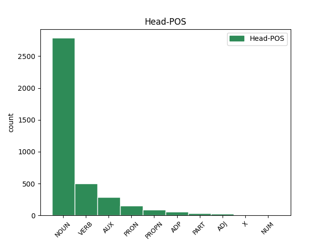

Distribution of features within this leaf

Agreement Rules sorted by frequency.
- When the dependent token is the conjunct(conj) of the head token, and the head token is NOUN and the dependent token is NOUN.
1 Un _ _ _ _ 0 _ _ _
2 devezh _ _ _ _ 0 _ _ _
3 an _ _ _ _ 0 _ _ _
4 ofisour ofisour NOUN _ Case=NomAcc|Definite=Def|Gender=Masc|Number=Sing 0 _ _ _
5 o _ _ _ _ 0 _ _ _
6 vale vale NOUN _ Number=Sing 4 conj _ _
7 war _ _ _ _ 0 _ _ _
8 gein _ _ _ _ 0 _ _ _
9 e _ _ _ _ 0 _ _ _
10 jav _ _ _ _ 0 _ _ _
11 , _ _ _ _ 0 _ _ _
1 Diabarzh diabarzh NOUN _ Case=NomAcc|Gender=Masc|Number=Sing 0 _ _ _
2 moskeenn moskeenn NOUN _ Case=NomAcc|Gender=Masc|Number=Sing 1 compound _ _
3 ar _ _ _ _ 0 _ _ _
4 Sheikh _ _ _ _ 0 _ _ _
5 Lutfallah _ _ _ _ 0 _ _ _
6 , _ _ _ _ 0 _ _ _
7 Ispahan _ _ _ _ 0 _ _ _
8 . _ _ _ _ 0 _ _ _
1 Dindan dindan NOUN _ Case=NomAcc|Gender=Masc|Number=Sing 0 _ _ _
2 e _ _ _ _ 0 _ _ _
3 furm furm NOUN _ Case=NomAcc|Gender=Masc|Number=Sing 1 mod _ _
4 ordinal _ _ _ _ 0 _ _ _
5 é _ _ _ _ 0 _ _ _
6 an _ _ _ _ 0 _ _ _
7 drougsant _ _ _ _ 0 _ _ _
8 or _ _ _ _ 0 _ _ _
9 hleñved _ _ _ _ 0 _ _ _
10 - _ _ _ _ 0 _ _ _
11 spéred _ _ _ _ 0 _ _ _
12 hale _ _ _ _ 0 _ _ _
13 - _ _ _ _ 0 _ _ _
14 ouenn _ _ _ _ 0 _ _ _
15 , _ _ _ _ 0 _ _ _
16 pe _ _ _ _ 0 _ _ _
17 ablam _ _ _ _ 0 _ _ _
18 da _ _ _ _ 0 _ _ _
19 labéiou _ _ _ _ 0 _ _ _
20 ban _ _ _ _ 0 _ _ _
21 empenn _ _ _ _ 0 _ _ _
22 . _ _ _ _ 0 _ _ _
1 Kavout _ _ _ _ 0 _ _ _
2 a _ _ _ _ 0 _ _ _
3 reas rea VERB _ Gender=Masc|Number=Sing|Person=3|Tense=Past 0 _ _ _
4 e _ _ _ _ 0 _ _ _
5 labour labour NOUN _ Gender=Masc|Number=Sing 3 comp:obj _ _
6 kentañ _ _ _ _ 0 _ _ _
7 e _ _ _ _ 0 _ _ _
8 Combo _ _ _ _ 0 _ _ _
9 Latin _ _ _ _ 0 _ _ _
10 Jazz _ _ _ _ 0 _ _ _
11 Eddie _ _ _ _ 0 _ _ _
12 Bonnemere _ _ _ _ 0 _ _ _
13 . _ _ _ _ 0 _ _ _
1 Kavet _ _ _ _ 0 _ _ _
2 e _ _ _ _ 0 _ _ _
3 vez _ _ _ _ 0 _ _ _
4 an _ _ _ _ 0 _ _ _
5 dourlamm dourlamm NOUN _ Case=NomAcc|Definite=Def|Gender=Masc|Number=Sing 0 _ _ _
6 kentañ _ _ _ _ 0 _ _ _
7 , _ _ _ _ 0 _ _ _
8 an _ _ _ _ 0 _ _ _
9 hini hini NOUN _ Number=Sing 5 appos _ _
10 tostañ _ _ _ _ 0 _ _ _
11 da _ _ _ _ 0 _ _ _
12 c'henoù _ _ _ _ 0 _ _ _
13 ar _ _ _ _ 0 _ _ _
14 stêr _ _ _ _ 0 _ _ _
15 e _ _ _ _ 0 _ _ _
16 Aswan _ _ _ _ 0 _ _ _
17 en _ _ _ _ 0 _ _ _
18 norzh _ _ _ _ 0 _ _ _
19 da _ _ _ _ 0 _ _ _
20 stankell _ _ _ _ 0 _ _ _
21 Aswan _ _ _ _ 0 _ _ _
22 . _ _ _ _ 0 _ _ _
1 Guido _ _ _ _ 0 _ _ _
2 Cesal _ _ _ _ 0 _ _ _
3 eo _ _ _ _ 0 _ _ _
4 sekretour sekretour NOUN _ Number=Sing 0 _ _ _
5 ar _ _ _ _ 0 _ _ _
6 strollad strollad NOUN _ Number=Sing 4 mod@poss _ _
7 abaoe _ _ _ _ 0 _ _ _
8 kendalc'h _ _ _ _ 0 _ _ _
9 Saint _ _ _ _ 0 _ _ _
10 - _ _ _ _ 0 _ _ _
11 Vincent _ _ _ _ 0 _ _ _
12 e _ _ _ _ 0 _ _ _
13 2006 _ _ _ _ 0 _ _ _
14 . _ _ _ _ 0 _ _ _
1 Dindan _ _ _ _ 0 _ _ _
2 e _ _ _ _ 0 _ _ _
3 furm _ _ _ _ 0 _ _ _
4 ordinal _ _ _ _ 0 _ _ _
5 é é AUX _ Gender=Masc|Number=Sing|Person=3 0 _ _ _
6 an _ _ _ _ 0 _ _ _
7 drougsant drougsant NOUN _ Case=NomAcc|Definite=Def|Gender=Masc|Number=Sing 5 comp:pred _ _
8 or _ _ _ _ 0 _ _ _
9 hleñved _ _ _ _ 0 _ _ _
10 - _ _ _ _ 0 _ _ _
11 spéred _ _ _ _ 0 _ _ _
12 hale _ _ _ _ 0 _ _ _
13 - _ _ _ _ 0 _ _ _
14 ouenn _ _ _ _ 0 _ _ _
15 , _ _ _ _ 0 _ _ _
16 pe _ _ _ _ 0 _ _ _
17 ablam _ _ _ _ 0 _ _ _
18 da _ _ _ _ 0 _ _ _
19 labéiou _ _ _ _ 0 _ _ _
20 ban _ _ _ _ 0 _ _ _
21 empenn _ _ _ _ 0 _ _ _
22 . _ _ _ _ 0 _ _ _
1 E _ _ _ _ 0 _ _ _
2 yezhoù _ NOUN _ Gender=Masc|Number=Plur 4 subj _ _
3 all _ _ _ _ 0 _ _ _
4 avat _ VERB _ Mood=Ind|Number=Plur|Person=3|Tense=Pres|VerbForm=Fin 0 _ _ _
5 e _ _ _ _ 0 _ _ _
6 c'hellont _ _ _ _ 0 _ _ _
7 talvzout _ _ _ _ 0 _ _ _
8 ivez _ _ _ _ 0 _ _ _
9 evit _ _ _ _ 0 _ _ _
10 merkañ _ _ _ _ 0 _ _ _
11 diforc'hoù _ _ _ _ 0 _ _ _
12 morfologel _ _ _ _ 0 _ _ _
13 ha _ _ _ _ 0 _ _ _
14 / _ _ _ _ 0 _ _ _
15 pe _ _ _ _ 0 _ _ _
16 kevreadurezhel _ _ _ _ 0 _ _ _
17 , _ _ _ _ 0 _ _ _
18 da _ _ _ _ 0 _ _ _
19 skouer _ _ _ _ 0 _ _ _
20 e _ _ _ _ 0 _ _ _
21 saozneg _ _ _ _ 0 _ _ _
22 : _ _ _ _ 0 _ _ _
1 Ar _ _ _ _ 0 _ _ _
2 yezh _ _ _ _ 0 _ _ _
3 japanek _ _ _ _ 0 _ _ _
4 nemeti _ _ _ _ 0 _ _ _
5 an _ _ _ _ 0 _ _ _
6 hini hini NOUN _ Case=NomAcc|Definite=Def|Gender=Masc|Number=Sing 7 comp:pred _ _
7 eo is PRON _ Case=Abl|Gender=Masc|Number=Sing|Person=3|PronType=Prs 0 _ _ _
8 a _ _ _ _ 0 _ _ _
9 implij _ _ _ _ 0 _ _ _
10 kensonennoù _ _ _ _ 0 _ _ _
11 e _ _ _ _ 0 _ _ _
12 diwezh _ _ _ _ 0 _ _ _
13 ur _ _ _ _ 0 _ _ _
14 silabenn _ _ _ _ 0 _ _ _
15 . _ _ _ _ 0 _ _ _
1 Dindan dindan NOUN _ Case=NomAcc|Gender=Masc|Number=Sing 5 subj _ _
2 e _ _ _ _ 0 _ _ _
3 furm _ _ _ _ 0 _ _ _
4 ordinal _ _ _ _ 0 _ _ _
5 é é AUX _ Gender=Masc|Number=Sing|Person=3 0 _ _ _
6 an _ _ _ _ 0 _ _ _
7 drougsant _ _ _ _ 0 _ _ _
8 or _ _ _ _ 0 _ _ _
9 hleñved _ _ _ _ 0 _ _ _
10 - _ _ _ _ 0 _ _ _
11 spéred _ _ _ _ 0 _ _ _
12 hale _ _ _ _ 0 _ _ _
13 - _ _ _ _ 0 _ _ _
14 ouenn _ _ _ _ 0 _ _ _
15 , _ _ _ _ 0 _ _ _
16 pe _ _ _ _ 0 _ _ _
17 ablam _ _ _ _ 0 _ _ _
18 da _ _ _ _ 0 _ _ _
19 labéiou _ _ _ _ 0 _ _ _
20 ban _ _ _ _ 0 _ _ _
21 empenn _ _ _ _ 0 _ _ _
22 . _ _ _ _ 0 _ _ _
1 Kevatal kevatal NOUN _ Number=Sing 0 _ _ _
2 eo is PRON _ Case=Abl|Gender=Masc|Number=Sing|Person=3|PronType=Prs 1 mod _ _
3 d'al _ _ _ _ 0 _ _ _
4 lizherenn _ _ _ _ 0 _ _ _
5 ヂ _ _ _ _ 0 _ _ _
6 hervez _ _ _ _ 0 _ _ _
7 ar _ _ _ _ 0 _ _ _
8 silabenneg _ _ _ _ 0 _ _ _
9 japanek _ _ _ _ 0 _ _ _
10 all _ _ _ _ 0 _ _ _
11 anvet _ _ _ _ 0 _ _ _
12 katakana _ _ _ _ 0 _ _ _
13 . _ _ _ _ 0 _ _ _
1 Ha _ _ _ _ 0 _ _ _
2 pan _ _ _ _ 0 _ _ _
3 dheth _ _ _ _ 0 _ _ _
4 y _ _ _ _ 0 _ _ _
5 helgun _ _ _ _ 0 _ _ _
6 dhe _ _ _ _ 0 _ _ _
7 vyn vyn NOUN _ Case=NomAcc|Gender=Masc|Number=Sing 0 _ _ _
8 an _ _ _ _ 0 _ _ _
9 lanergh lanergh NOUN _ Case=NomAcc|Definite=Def|Gender=Masc|Number=Sing 7 comp:obj _ _
10 , _ _ _ _ 0 _ _ _
11 ef _ _ _ _ 0 _ _ _
12 a _ _ _ _ 0 _ _ _
13 welas _ _ _ _ 0 _ _ _
14 carow _ _ _ _ 0 _ _ _
15 arak _ _ _ _ 0 _ _ _
16 an _ _ _ _ 0 _ _ _
17 bagas _ _ _ _ 0 _ _ _
18 - _ _ _ _ 0 _ _ _
19 hel _ _ _ _ 0 _ _ _
20 aral _ _ _ _ 0 _ _ _
21 . _ _ _ _ 0 _ _ _
1 Kevatal kevatal NOUN _ Number=Sing 0 _ _ _
2 eo is PRON _ Case=Abl|Gender=Masc|Number=Sing|Person=3|PronType=Prs 1 subj _ _
3 d'al _ _ _ _ 0 _ _ _
4 lizherenn _ _ _ _ 0 _ _ _
5 ヨ _ _ _ _ 0 _ _ _
6 hervez _ _ _ _ 0 _ _ _
7 ar _ _ _ _ 0 _ _ _
8 silabenneg _ _ _ _ 0 _ _ _
9 japanek _ _ _ _ 0 _ _ _
10 all _ _ _ _ 0 _ _ _
11 anvet _ _ _ _ 0 _ _ _
12 katakana _ _ _ _ 0 _ _ _
13 . _ _ _ _ 0 _ _ _
1 Skiant _ _ _ _ 0 _ _ _
2 ar _ _ _ _ 0 _ _ _
3 plant _ _ _ _ 0 _ _ _
4 pe _ _ _ _ 0 _ _ _
5 ar _ _ _ _ 0 _ _ _
6 struzh struzh NOUN _ Number=Sing 0 _ _ _
7 eo is PRON _ Case=Abl|Gender=Masc|Number=Sing|Person=3|PronType=Prs 6 mod@poss _ _
8 ar _ _ _ _ 0 _ _ _
9 botanik _ _ _ _ 0 _ _ _
10 ( _ _ _ _ 0 _ _ _
11 diwar _ _ _ _ 0 _ _ _
12 ar _ _ _ _ 0 _ _ _
13 gresianeg _ _ _ _ 0 _ _ _
14 βοτάνη _ _ _ _ 0 _ _ _
15 = _ _ _ _ 0 _ _ _
16 geotenn _ _ _ _ 0 _ _ _
17 , _ _ _ _ 0 _ _ _
18 plantenn _ _ _ _ 0 _ _ _
19 ) _ _ _ _ 0 _ _ _
20 . _ _ _ _ 0 _ _ _
1 Tiez tiez VERB _ Number=Sing|Person=2 0 _ _ _
2 - _ _ _ _ 0 _ _ _
3 te te PRON _ Number=Sing|Person=2 1 comp:obj _ _
4 a _ _ _ _ 0 _ _ _
5 zo _ _ _ _ 0 _ _ _
6 niverus _ _ _ _ 0 _ _ _
7 e _ _ _ _ 0 _ _ _
8 Beijing _ _ _ _ 0 _ _ _
9 hag _ _ _ _ 0 _ _ _
10 an _ _ _ _ 0 _ _ _
11 te _ _ _ _ 0 _ _ _
12 a _ _ _ _ 0 _ _ _
13 zo _ _ _ _ 0 _ _ _
14 ur _ _ _ _ 0 _ _ _
15 perzh _ _ _ _ 0 _ _ _
16 pouezhus _ _ _ _ 0 _ _ _
17 eus _ _ _ _ 0 _ _ _
18 ar _ _ _ _ 0 _ _ _
19 sevenadur _ _ _ _ 0 _ _ _
20 lec'hiel _ _ _ _ 0 _ _ _
21 . _ _ _ _ 0 _ _ _
1 Ur _ _ _ _ 0 _ _ _
2 yezh _ _ _ _ 0 _ _ _
3 gant _ _ _ _ 0 _ _ _
4 pemp _ _ _ _ 0 _ _ _
5 tonenn tonenn NOUN _ Case=NomAcc|Gender=Masc|Number=Sing 0 _ _ _
6 an _ _ _ _ 0 _ _ _
7 hini hini NOUN _ Case=NomAcc|Definite=Def|Gender=Fem|Number=Sing 5 subj _ _
8 eo _ _ _ _ 0 _ _ _
9 . _ _ _ _ 0 _ _ _
1 Dùn _ _ _ _ 0 _ _ _
2 Èideann Èideann PROPN _ Case=NomAcc|Gender=Masc|Number=Sing 0 _ _ _
3 ( _ _ _ _ 0 _ _ _
4 gouezeleg gouezeleg NOUN _ Case=NomAcc|Gender=Masc|Number=Sing 2 mod _ _
5 Skos _ _ _ _ 0 _ _ _
6 ) _ _ _ _ 0 _ _ _
1 Yezh _ _ _ _ 0 _ _ _
2 pennañ _ _ _ _ 0 _ _ _
3 Manipour _ _ _ _ 0 _ _ _
4 e _ _ _ _ 0 _ _ _
5 biz _ _ _ _ 0 _ _ _
6 India _ _ _ _ 0 _ _ _
7 e _ _ _ _ 0 _ _ _
8 - _ _ _ _ 0 _ _ _
9 lec'h _ _ _ _ 0 _ _ _
10 m'emañ m' ADP _ Number=Sing|Person=1 0 _ _ _
11 yezh yezh NOUN _ Number=Sing 10 comp:obj _ _
12 ofisiel _ _ _ _ 0 _ _ _
13 ar _ _ _ _ 0 _ _ _
14 velestradurezh _ _ _ _ 0 _ _ _
15 eo _ _ _ _ 0 _ _ _
16 ar _ _ _ _ 0 _ _ _
17 manipoureg _ _ _ _ 0 _ _ _
18 ( _ _ _ _ 0 _ _ _
19 meithei _ _ _ _ 0 _ _ _
20 ) _ _ _ _ 0 _ _ _
21 . _ _ _ _ 0 _ _ _
1 An _ _ _ _ 0 _ _ _
2 amforennoù _ _ _ _ 0 _ _ _
3 zo _ _ _ _ 0 _ _ _
4 listri _ _ _ _ 0 _ _ _
5 pri _ _ _ _ 0 _ _ _
6 - _ _ _ _ 0 _ _ _
7 poazh _ _ _ _ 0 _ _ _
8 eus _ _ _ _ 0 _ _ _
9 an _ _ _ _ 0 _ _ _
10 Henamzer _ _ _ _ 0 _ _ _
11 , _ _ _ _ 0 _ _ _
12 daou _ _ _ _ 0 _ _ _
13 zorn _ _ _ _ 0 _ _ _
14 outo _ _ _ _ 0 _ _ _
15 peurliesañ _ _ _ _ 0 _ _ _
16 , _ _ _ _ 0 _ _ _
17 unan _ _ _ _ 0 _ _ _
18 a _ _ _ _ 0 _ _ _
19 bep bep VERB _ Mood=Ind|Number=Sing|Person=1|Tense=Pres|VerbForm=Fin 0 _ _ _
20 tu tu PRON _ Number=Sing|Person=2|PronType=Prs 19 subj _ _
21 , _ _ _ _ 0 _ _ _
22 strishoc’h _ _ _ _ 0 _ _ _
23 evit _ _ _ _ 0 _ _ _
24 ar _ _ _ _ 0 _ _ _
25 c’hof _ _ _ _ 0 _ _ _
26 , _ _ _ _ 0 _ _ _
27 a _ _ _ _ 0 _ _ _
28 veze _ _ _ _ 0 _ _ _
29 miret _ _ _ _ 0 _ _ _
30 dourennoù _ _ _ _ 0 _ _ _
31 pe _ _ _ _ 0 _ _ _
32 greun _ _ _ _ 0 _ _ _
33 enno _ _ _ _ 0 _ _ _
34 . _ _ _ _ 0 _ _ _
1 Kêr _ _ _ _ 0 _ _ _
2 Ha _ _ _ _ 0 _ _ _
3 Noi _ _ _ _ 0 _ _ _
4 eo _ _ _ _ 0 _ _ _
5 bet _ _ _ _ 0 _ _ _
6 kêr kêr NOUN _ Number=Sing 0 _ _ _
7 - _ _ _ _ 0 _ _ _
8 benn benn NOUN _ Number=Sing 6 compound@plur _ _
9 an _ _ _ _ 0 _ _ _
10 Tonkin _ _ _ _ 0 _ _ _
11 sinaat _ _ _ _ 0 _ _ _
12 abaoe _ _ _ _ 0 _ _ _
13 ar _ _ _ _ 0 _ _ _
14 VIIvet _ _ _ _ 0 _ _ _
15 kantved _ _ _ _ 0 _ _ _
16 ; _ _ _ _ 0 _ _ _
17 d'ar _ _ _ _ 0 _ _ _
18 mare _ _ _ _ 0 _ _ _
19 - _ _ _ _ 0 _ _ _
20 se _ _ _ _ 0 _ _ _
21 e _ _ _ _ 0 _ _ _
22 veze _ _ _ _ 0 _ _ _
23 anavezet _ _ _ _ 0 _ _ _
24 dre _ _ _ _ 0 _ _ _
25 an _ _ _ _ 0 _ _ _
26 anv _ _ _ _ 0 _ _ _
27 sinaek _ _ _ _ 0 _ _ _
28 東京 _ _ _ _ 0 _ _ _
29 ( _ _ _ _ 0 _ _ _
30 sinalunioù _ _ _ _ 0 _ _ _
31 a _ _ _ _ 0 _ _ _
32 vije _ _ _ _ 0 _ _ _
33 distaget _ _ _ _ 0 _ _ _
34 dongjing _ _ _ _ 0 _ _ _
35 e _ _ _ _ 0 _ _ _
36 mandarineg _ _ _ _ 0 _ _ _
37 hiziv _ _ _ _ 0 _ _ _
38 ) _ _ _ _ 0 _ _ _
39 , _ _ _ _ 0 _ _ _
40 hag _ _ _ _ 0 _ _ _
41 a _ _ _ _ 0 _ _ _
42 dalvez _ _ _ _ 0 _ _ _
43 kêr _ _ _ _ 0 _ _ _
44 - _ _ _ _ 0 _ _ _
45 benn _ _ _ _ 0 _ _ _
46 ar _ _ _ _ 0 _ _ _
47 reter _ _ _ _ 0 _ _ _
48 . _ _ _ _ 0 _ _ _
1 Dizoloet _ _ _ _ 0 _ _ _
2 e _ _ _ _ 0 _ _ _
3 voe voe VERB _ Gender=Masc|Number=Sing|Person=3|Tense=Past 0 _ _ _
4 ar _ _ _ _ 0 _ _ _
5 yezh yezh NOUN _ Gender=Masc|Number=Sing 3 udep _ _
6 - _ _ _ _ 0 _ _ _
7 mañ _ _ _ _ 0 _ _ _
8 e _ _ _ _ 0 _ _ _
9 1956 _ _ _ _ 0 _ _ _
10 . _ _ _ _ 0 _ _ _
1 Un _ _ _ _ 0 _ _ _
2 nevezc'her _ _ _ _ 0 _ _ _
3 eo is PRON _ Case=Abl|Gender=Masc|Number=Sing|Person=3|PronType=Prs 0 _ _ _
4 an _ _ _ _ 0 _ _ _
5 termen termen NOUN _ Case=NomAcc|Definite=Def|Gender=Masc|Number=Sing 3 subj _ _
6 treuzvaouez _ _ _ _ 0 _ _ _
7 bet _ _ _ _ 0 _ _ _
8 savet _ _ _ _ 0 _ _ _
9 diwar _ _ _ _ 0 _ _ _
10 ar _ _ _ _ 0 _ _ _
11 saozneg _ _ _ _ 0 _ _ _
12 transwoman _ _ _ _ 0 _ _ _
13 . _ _ _ _ 0 _ _ _
1 Setu setu AUX _ Number=Sing|Person=2 0 _ _ _
2 eh _ _ _ _ 0 _ _ _
3 eus eus PRON _ Number=Sing|Person=2 1 subj _ _
4 bet _ _ _ _ 0 _ _ _
5 tud _ _ _ _ 0 _ _ _
6 é _ _ _ _ 0 _ _ _
7 soñjal _ _ _ _ 0 _ _ _
8 e _ _ _ _ 0 _ _ _
9 vehe _ _ _ _ 0 _ _ _
10 adsavet _ _ _ _ 0 _ _ _
11 ar _ _ _ _ 0 _ _ _
12 strollad _ _ _ _ 0 _ _ _
13 e _ _ _ _ 0 _ _ _
14 - _ _ _ _ 0 _ _ _
15 raok _ _ _ _ 0 _ _ _
16 pell _ _ _ _ 0 _ _ _
17 . _ _ _ _ 0 _ _ _
1 Doujet _ _ _ _ 0 _ _ _
2 meurbet meurbet NOUN _ Case=NomAcc|Gender=Masc|Number=Sing 0 _ _ _
3 eo is PRON _ Case=Abl|Gender=Masc|Number=Sing|Person=3|PronType=Prs 2 det _ _
4 ar _ _ _ _ 0 _ _ _
5 stêr _ _ _ _ 0 _ _ _
6 Teribe _ _ _ _ 0 _ _ _
7 ganto _ _ _ _ 0 _ _ _
8 . _ _ _ _ 0 _ _ _
1 July July PROPN _ Number=Sing 0 _ _ _
2 1 _ _ _ _ 0 _ _ _
3 , _ _ _ _ 0 _ _ _
4 1867 _ _ _ _ 0 _ _ _
5 ( _ _ _ _ 0 _ _ _
6 1añ 1añ NOUN _ Number=Sing 1 appos _ _
7 ) _ _ _ _ 0 _ _ _
1 E _ _ _ _ 0 _ _ _
2 fin fin NOUN _ Number=Sing 6 udep _ _
3 ar _ _ _ _ 0 _ _ _
4 bloaz _ _ _ _ 0 _ _ _
5 ez _ _ _ _ 0 _ _ _
6 eas as AUX _ Number=Sing|Person=2 0 _ _ _
7 da _ _ _ _ 0 _ _ _
8 Vro _ _ _ _ 0 _ _ _
9 - _ _ _ _ 0 _ _ _
10 Suis _ _ _ _ 0 _ _ _
11 e _ _ _ _ 0 _ _ _
12 - _ _ _ _ 0 _ _ _
13 lec’h _ _ _ _ 0 _ _ _
14 ma _ _ _ _ 0 _ _ _
15 skrivas _ _ _ _ 0 _ _ _
16 ur _ _ _ _ 0 _ _ _
17 pezh _ _ _ _ 0 _ _ _
18 - _ _ _ _ 0 _ _ _
19 c’hoari _ _ _ _ 0 _ _ _
20 anvet _ _ _ _ 0 _ _ _
21 La _ _ _ _ 0 _ _ _
22 Commune _ _ _ _ 0 _ _ _
23 de _ _ _ _ 0 _ _ _
24 Paris _ _ _ _ 0 _ _ _
25 . _ _ _ _ 0 _ _ _
1 Fellout _ _ _ _ 0 _ _ _
2 a _ _ _ _ 0 _ _ _
3 rae _ _ _ _ 0 _ _ _
4 dezhañ _ _ _ _ 0 _ _ _
5 gouzout _ _ _ _ 0 _ _ _
6 petra _ _ _ _ 0 _ _ _
7 oa _ _ _ _ 0 _ _ _
8 ar _ _ _ _ 0 _ _ _
9 gwad _ _ _ _ 0 _ _ _
10 , _ _ _ _ 0 _ _ _
11 peseurt _ _ _ _ 0 _ _ _
12 levezon _ _ _ _ 0 _ _ _
13 en _ _ _ _ 0 _ _ _
14 doa _ _ _ _ 0 _ _ _
15 war _ _ _ _ 0 _ _ _
16 ar _ _ _ _ 0 _ _ _
17 vuhez _ _ _ _ 0 _ _ _
18 , _ _ _ _ 0 _ _ _
19 peseurt peseurt NOUN _ Number=Sing 0 _ _ _
20 kefridi _ _ _ _ 0 _ _ _
21 e _ _ _ _ 0 _ _ _
22 frammadur frammadur NOUN _ Case=NomAcc|Gender=Masc|Number=Sing 19 conj:emb _ _
23 ar _ _ _ _ 0 _ _ _
24 c'horf _ _ _ _ 0 _ _ _
25 . _ _ _ _ 0 _ _ _
1 Kemm _ _ _ _ 0 _ _ _
2 - _ _ _ _ 0 _ _ _
3 digemm _ _ _ _ 0 _ _ _
4 eo is PRON _ Case=Abl|Gender=Masc|Number=Sing|Person=3|PronType=Prs 5 comp:obj _ _
5 renkadur renkadur NOUN _ Number=Sing 0 _ _ _
6 ar _ _ _ _ 0 _ _ _
7 c'hyuioù _ _ _ _ 0 _ _ _
8 hervez _ _ _ _ 0 _ _ _
9 ar _ _ _ _ 0 _ _ _
10 skolioù _ _ _ _ 0 _ _ _
11 hag _ _ _ _ 0 _ _ _
12 hervez _ _ _ _ 0 _ _ _
13 ar _ _ _ _ 0 _ _ _
14 sportoù _ _ _ _ 0 _ _ _
15 . _ _ _ _ 0 _ _ _
1 E _ _ _ _ 0 _ _ _
2 dibenn _ _ _ _ 0 _ _ _
3 194ô _ _ _ _ 0 _ _ _
4 e e PART _ Mood=Ind|Number=Sing|Person=3|Polarity=Neg|VerbForm=Fin 0 _ _ _
5 oa _ _ _ _ 0 _ _ _
6 deuet _ _ _ _ 0 _ _ _
7 ar _ _ _ _ 0 _ _ _
8 brezel brezel NOUN _ Case=NomAcc|Definite=Def|Gender=Masc|Number=Sing 4 subj _ _
9 da _ _ _ _ 0 _ _ _
10 vezañ _ _ _ _ 0 _ _ _
11 didec'hus _ _ _ _ 0 _ _ _
12 hag _ _ _ _ 0 _ _ _
13 HO _ _ _ _ 0 _ _ _
14 a _ _ _ _ 0 _ _ _
15 zisklerias _ _ _ _ 0 _ _ _
16 neuze _ _ _ _ 0 _ _ _
17 d'ur _ _ _ _ 0 _ _ _
18 Gall _ _ _ _ 0 _ _ _
19 : _ _ _ _ 0 _ _ _
20 " _ _ _ _ 0 _ _ _
21 C'hwi _ _ _ _ 0 _ _ _
22 a _ _ _ _ 0 _ _ _
23 c'hell _ _ _ _ 0 _ _ _
24 lazhañ _ _ _ _ 0 _ _ _
25 dek _ _ _ _ 0 _ _ _
26 deomp _ _ _ _ 0 _ _ _
27 evit _ _ _ _ 0 _ _ _
28 unan _ _ _ _ 0 _ _ _
29 deoc'h _ _ _ _ 0 _ _ _
30 hogen _ _ _ _ 0 _ _ _
31 daoust _ _ _ _ 0 _ _ _
32 da _ _ _ _ 0 _ _ _
33 se _ _ _ _ 0 _ _ _
34 e _ _ _ _ 0 _ _ _
35 talc'himp _ _ _ _ 0 _ _ _
36 ha _ _ _ _ 0 _ _ _
37 trec'h _ _ _ _ 0 _ _ _
38 e _ _ _ _ 0 _ _ _
39 vimp _ _ _ _ 0 _ _ _
40 en _ _ _ _ 0 _ _ _
41 diwezh _ _ _ _ 0 _ _ _
42 . _ _ _ _ 0 _ _ _
43 " _ _ _ _ 0 _ _ _
1 An _ _ _ _ 0 _ _ _
2 Hadean Hadean PROPN _ Case=NomAcc|Gender=Masc|Number=Sing 0 _ _ _
3 zo _ _ _ _ 0 _ _ _
4 an _ _ _ _ 0 _ _ _
5 eon eon NOUN _ Case=NomAcc|Gender=Masc|Number=Sing 2 conj _ _
6 douaroniel _ _ _ _ 0 _ _ _
7 zo _ _ _ _ 0 _ _ _
8 a _ _ _ _ 0 _ _ _
9 - _ _ _ _ 0 _ _ _
10 raok _ _ _ _ 0 _ _ _
11 an _ _ _ _ 0 _ _ _
12 Arkean _ _ _ _ 0 _ _ _
13 . _ _ _ _ 0 _ _ _
1 Bez _ _ _ _ 0 _ _ _
2 ' _ _ _ _ 0 _ _ _
3 e _ _ _ _ 0 _ _ _
4 voe _ VERB _ Mood=Ind|Number=Sing|Person=3|Tense=Past|VerbForm=Fin 0 _ _ _
5 ivez _ _ _ _ 0 _ _ _
6 skrivagner skrivagner NOUN _ Number=Sing 4 comp:pred _ _
7 ha _ _ _ _ 0 _ _ _
8 pennskridaozer _ _ _ _ 0 _ _ _
9 evit _ _ _ _ 0 _ _ _
10 ar _ _ _ _ 0 _ _ _
11 San _ _ _ _ 0 _ _ _
12 Francisco _ _ _ _ 0 _ _ _
13 Examiner _ _ _ _ 0 _ _ _
14 ( _ _ _ _ 0 _ _ _
15 embannadur _ _ _ _ 0 _ _ _
16 ar _ _ _ _ 0 _ _ _
17 Sul _ _ _ _ 0 _ _ _
18 ) _ _ _ _ 0 _ _ _
19 e _ _ _ _ 0 _ _ _
20 - _ _ _ _ 0 _ _ _
21 pad _ _ _ _ 0 _ _ _
22 un _ _ _ _ 0 _ _ _
23 dek _ _ _ _ 0 _ _ _
24 vloaz _ _ _ _ 0 _ _ _
25 bennak _ _ _ _ 0 _ _ _
26 . _ _ _ _ 0 _ _ _
1 Ul _ _ _ _ 0 _ _ _
2 liamm _ _ _ _ 0 _ _ _
3 etre _ _ _ _ 0 _ _ _
4 Mor _ _ _ _ 0 _ _ _
5 Andaman _ _ _ _ 0 _ _ _
6 , _ _ _ _ 0 _ _ _
7 lodenn _ _ _ _ 0 _ _ _
8 Meurvor _ _ _ _ 0 _ _ _
9 Indez _ _ _ _ 0 _ _ _
10 , _ _ _ _ 0 _ _ _
11 ha _ _ _ _ 0 _ _ _
12 Mor _ _ _ _ 0 _ _ _
13 Sina _ _ _ _ 0 _ _ _
14 ar _ _ _ _ 0 _ _ _
15 Su _ _ _ _ 0 _ _ _
16 eo _ _ _ _ 0 _ _ _
17 dre _ _ _ _ 0 _ _ _
18 un _ _ _ _ 0 _ _ _
19 tremen tremen NOUN _ Number=Sing 0 _ _ _
20 hir _ _ _ _ 0 _ _ _
21 tre _ _ _ _ 0 _ _ _
22 hag _ _ _ _ 0 _ _ _
23 eo is PRON _ Case=Abl|Gender=Masc|Number=Sing|Person=3|PronType=Prs 19 conj _ _
24 ar _ _ _ _ 0 _ _ _
25 strizh _ _ _ _ 0 _ _ _
26 - _ _ _ _ 0 _ _ _
27 mor _ _ _ _ 0 _ _ _
28 hirañ _ _ _ _ 0 _ _ _
29 er _ _ _ _ 0 _ _ _
30 bed _ _ _ _ 0 _ _ _
31 . _ _ _ _ 0 _ _ _
1 Ministrerezhioù _ _ _ _ 0 _ _ _
2 al al ADP _ AdpType=Preppron|Gender=Masc|Number=Sing 0 _ _ _
3 labour labour NOUN _ Gender=Masc|Number=Sing 2 comp:obj@det _ _
4 hag _ _ _ _ 0 _ _ _
5 ar _ _ _ _ 0 _ _ _
6 sevel _ _ _ _ 0 _ _ _
7 - _ _ _ _ 0 _ _ _
8 tiez _ _ _ _ 0 _ _ _
9 en _ _ _ _ 0 _ _ _
10 em _ _ _ _ 0 _ _ _
11 gav _ _ _ _ 0 _ _ _
12 ivez _ _ _ _ 0 _ _ _
13 etre _ _ _ _ 0 _ _ _
14 daouarn _ _ _ _ 0 _ _ _
15 izili _ _ _ _ 0 _ _ _
16 Samoobrona _ _ _ _ 0 _ _ _
17 . _ _ _ _ 0 _ _ _
1 Evit _ _ _ _ 0 _ _ _
2 ar _ _ _ _ 0 _ _ _
3 paprennoù paprennoù NOUN _ Case=NomAcc|Gender=Fem|Number=Plur 0 _ _ _
4 a _ _ _ _ 0 _ _ _
5 - _ _ _ _ 0 _ _ _
6 vremann _ _ _ _ 0 _ _ _
7 eo is PRON _ Number=Plur|Person=3 3 compound _ _
8 gwelloc'h _ _ _ _ 0 _ _ _
9 gant _ _ _ _ 0 _ _ _
10 ar _ _ _ _ 0 _ _ _
11 ger _ _ _ _ 0 _ _ _
12 teul _ _ _ _ 0 _ _ _
13 . _ _ _ _ 0 _ _ _
1 Erfin _ _ _ _ 0 _ _ _
2 , _ _ _ _ 0 _ _ _
3 gremm gremm VERB _ Mood=Ind|Number=Sing|Person=1|Tense=Pres|VerbForm=Fin 0 _ _ _
4 an _ _ _ _ 0 _ _ _
5 Heol _ _ _ _ 0 _ _ _
6 ha _ _ _ _ 0 _ _ _
7 lusk lusk NOUN _ Case=NomAcc|Gender=Masc|Number=Sing 3 conj _ _
8 an _ _ _ _ 0 _ _ _
9 Douar _ _ _ _ 0 _ _ _
10 a _ _ _ _ 0 _ _ _
11 zo _ _ _ _ 0 _ _ _
12 an _ _ _ _ 0 _ _ _
13 orinoù _ _ _ _ 0 _ _ _
14 pennañ _ _ _ _ 0 _ _ _
15 . _ _ _ _ 0 _ _ _
1 Bratislava _ _ _ _ 0 _ _ _
2 ( _ _ _ _ 0 _ _ _
3 betek _ _ _ _ 0 _ _ _
4 1918 _ _ _ _ 0 _ _ _
5 Prešporek _ _ _ _ 0 _ _ _
6 ; _ _ _ _ 0 _ _ _
7 hungareg _ _ _ _ 0 _ _ _
8 : _ _ _ _ 0 _ _ _
9 Pozsony _ _ _ _ 0 _ _ _
10 , _ _ _ _ 0 _ _ _
11 alamaneg _ _ _ _ 0 _ _ _
12 : _ _ _ _ 0 _ _ _
13 Pressburg _ _ _ _ 0 _ _ _
14 ) _ _ _ _ 0 _ _ _
15 eo _ _ _ _ 0 _ _ _
16 kêr kêr NOUN _ Number=Sing 0 _ _ _
17 - _ _ _ _ 0 _ _ _
18 benn benn NOUN _ Number=Sing 16 unk@fixed _ _
19 Slovakia _ _ _ _ 0 _ _ _
20 . _ _ _ _ 0 _ _ _
1 Distaget distage ADJ _ Case=Nom|Definite=Ind|Gender=Neut|Number=Sing|Tense=Past|VerbForm=Part 0 _ _ _
2 e _ _ _ _ 0 _ _ _
3 vez vez NOUN _ Case=Nom|Definite=Ind|Gender=Com|Number=Sing 1 udep _ _
4 [ _ _ _ _ 0 _ _ _
5 f _ _ _ _ 0 _ _ _
6 ] _ _ _ _ 0 _ _ _
7 e _ _ _ _ 0 _ _ _
8 ruseg _ _ _ _ 0 _ _ _
9 . _ _ _ _ 0 _ _ _
1 Ha _ _ _ _ 0 _ _ _
2 c'hoant _ _ _ _ 0 _ _ _
3 em em PRON _ Number=Sing|Person=1|PronType=Prs 4 unk@expl _ _
4 behe beher VERB _ Mood=Ind|Number=Sing|Person=3|Tense=Pres|VerbForm=Fin 0 _ _ _
5 d'ober _ _ _ _ 0 _ _ _
6 c'hoazh _ _ _ _ 0 _ _ _
7 , _ _ _ _ 0 _ _ _
1 David _ _ _ _ 0 _ _ _
2 a _ _ _ _ 0 _ _ _
3 zo _ _ _ _ 0 _ _ _
4 an _ _ _ _ 0 _ _ _
5 eil _ _ _ _ 0 _ _ _
6 maread _ _ _ _ 0 _ _ _
7 douarouriel douarouriel NOUN _ Case=NomAcc|Gender=Masc|Number=Sing 0 _ _ _
8 eus eus PRON _ Number=Sing|Person=2 7 udep@prep _ _
9 ar _ _ _ _ 0 _ _ _
10 c'hambrian _ _ _ _ 0 _ _ _
11 . _ _ _ _ 0 _ _ _
1 Distaget distage ADJ _ Case=Nom|Definite=Ind|Gender=Neut|Number=Sing|Tense=Past|VerbForm=Part 0 _ _ _
2 e _ _ _ _ 0 _ _ _
3 vez vez NOUN _ Case=Nom|Definite=Ind|Gender=Com|Number=Sing 1 conj _ _
4 [ _ _ _ _ 0 _ _ _
5 z _ _ _ _ 0 _ _ _
6 ] _ _ _ _ 0 _ _ _
7 e _ _ _ _ 0 _ _ _
8 ruseg _ _ _ _ 0 _ _ _
9 . _ _ _ _ 0 _ _ _
1 D'an _ _ _ _ 0 _ _ _
2 31 _ _ _ _ 0 _ _ _
3 a _ _ _ _ 0 _ _ _
4 viz _ _ _ _ 0 _ _ _
5 Mae _ _ _ _ 0 _ _ _
6 ez _ _ _ _ 0 _ _ _
7 eas is AUX _ Number=Sing|Person=2 0 _ _ _
8 HO ho PRON _ Case=NomAcc|Gender=Masc|Number=Sing 7 comp:pred _ _
9 da _ _ _ _ 0 _ _ _
10 Vro _ _ _ _ 0 _ _ _
11 - _ _ _ _ 0 _ _ _
12 C'hall _ _ _ _ 0 _ _ _
13 evit _ _ _ _ 0 _ _ _
14 sînañ _ _ _ _ 0 _ _ _
15 ar _ _ _ _ 0 _ _ _
16 feur _ _ _ _ 0 _ _ _
17 diwezhañ _ _ _ _ 0 _ _ _
18 . _ _ _ _ 0 _ _ _
1 Ar _ _ _ _ 0 _ _ _
2 c'hontrol _ _ _ _ 0 _ _ _
3 diouzh _ _ _ _ 0 _ _ _
4 ar _ _ _ _ 0 _ _ _
5 substrat _ _ _ _ 0 _ _ _
6 eo is PRON _ Case=Abl|Gender=Masc|Number=Sing|Person=3|PronType=Prs 8 cc _ _
7 ar _ _ _ _ 0 _ _ _
8 superstrat superstrat NOUN _ Case=NomAcc|Definite=Def|Gender=Masc|Number=Sing 0 _ _ _
9 . _ _ _ _ 0 _ _ _
1 Ragenfrid _ _ _ _ 0 _ _ _
2 a _ _ _ _ 0 _ _ _
3 anavezas _ _ _ _ 0 _ _ _
4 galloud galloud NOUN _ Case=NomAcc|Gender=Masc|Number=Sing 5 compound _ _
5 Karl Karl PROPN _ Case=NomAcc|Gender=Masc|Number=Sing 0 _ _ _
6 . _ _ _ _ 0 _ _ _
1 Arveret _ _ _ _ 0 _ _ _
2 e _ _ _ _ 0 _ _ _
3 vez _ _ _ _ 0 _ _ _
4 an _ _ _ _ 0 _ _ _
5 enneg _ _ _ _ 0 _ _ _
6 " _ _ _ _ 0 _ _ _
7 pep _ _ _ _ 0 _ _ _
8 bit _ _ _ _ 0 _ _ _
9 da _ _ _ _ 0 _ _ _
10 1 _ _ _ _ 0 _ _ _
11 " _ _ _ _ 0 _ _ _
12 , _ _ _ _ 0 _ _ _
13 neuze neuze PRON _ Case=Nom|Number=Sing 0 _ _ _
14 an _ _ _ _ 0 _ _ _
15 enneg enneg NOUN _ Case=Nom|Number=Sing 13 conj _ _
16 : _ _ _ _ 0 _ _ _
1 Aozadur aozadur NOUN _ Number=Sing 0 _ _ _
2 Feur _ _ _ _ 0 _ _ _
3 - _ _ _ _ 0 _ _ _
4 emglev _ NOUN _ Number=Sing 1 flat _ _
5 Norzh _ _ _ _ 0 _ _ _
6 - _ _ _ _ 0 _ _ _
7 Atlantel _ _ _ _ 0 _ _ _
8 ( _ _ _ _ 0 _ _ _
9 AFNA _ _ _ _ 0 _ _ _
10 ) _ _ _ _ 0 _ _ _
1 Ur _ _ _ _ 0 _ _ _
2 wech _ _ _ _ 0 _ _ _
3 gwelet _ _ _ _ 0 _ _ _
4 ne _ _ _ _ 0 _ _ _
5 oa _ _ _ _ 0 _ _ _
6 ket _ _ _ _ 0 _ _ _
7 didrec’hus _ _ _ _ 0 _ _ _
8 an _ _ _ _ 0 _ _ _
9 impalaeriez _ _ _ _ 0 _ _ _
10 « _ _ _ _ 0 _ _ _
11 santel _ _ _ _ 0 _ _ _
12 » _ _ _ _ 0 _ _ _
13 ez _ _ _ _ 0 _ _ _
14 eo _ _ _ _ 0 _ _ _
15 savet _ _ _ _ 0 _ _ _
16 ar _ _ _ _ 0 _ _ _
17 soñj soñj NOUN _ Case=NomAcc|Definite=Def|Gender=Masc|Number=Sing 18 comp:obj _ _
18 ennañ enn PRON _ Gender=Masc|Number=Sing|Person=3 0 _ _ _
19 e _ _ _ _ 0 _ _ _
20 oa _ _ _ _ 0 _ _ _
21 tu _ _ _ _ 0 _ _ _
22 da _ _ _ _ 0 _ _ _
23 gemm _ _ _ _ 0 _ _ _
24 endroadur _ _ _ _ 0 _ _ _
25 ar _ _ _ _ 0 _ _ _
26 bed _ _ _ _ 0 _ _ _
27 . _ _ _ _ 0 _ _ _
1 Adalek _ _ _ _ 0 _ _ _
2 se _ _ _ _ 0 _ _ _
3 e e PART _ Mood=Ind|Number=Sing|Person=3|Polarity=Neg|VerbForm=Fin 0 _ _ _
4 vez _ _ _ _ 0 _ _ _
5 troet _ _ _ _ 0 _ _ _
6 darn _ _ _ _ 0 _ _ _
7 vrasañ _ _ _ _ 0 _ _ _
8 he _ _ _ _ 0 _ _ _
9 romantoù _ _ _ _ 0 _ _ _
10 e _ _ _ _ 0 _ _ _
11 saozneg _ _ _ _ 0 _ _ _
12 , _ _ _ _ 0 _ _ _
13 ar _ _ _ _ 0 _ _ _
14 pezh pezh NOUN _ Number=Sing 3 udep _ _
15 a _ _ _ _ 0 _ _ _
16 zo _ _ _ _ 0 _ _ _
17 ral _ _ _ _ 0 _ _ _
18 evit _ _ _ _ 0 _ _ _
19 ur _ _ _ _ 0 _ _ _
20 skrivagner _ _ _ _ 0 _ _ _
21 kebekat _ _ _ _ 0 _ _ _
22 a _ _ _ _ 0 _ _ _
23 skiant _ _ _ _ 0 _ _ _
24 - _ _ _ _ 0 _ _ _
25 faltazi _ _ _ _ 0 _ _ _
26 . _ _ _ _ 0 _ _ _
1 Evidon _ _ _ _ 0 _ _ _
2 - _ _ _ _ 0 _ _ _
3 me me PRON _ Number=Sing|Person=1 5 unk@expl _ _
4 ez _ _ _ _ 0 _ _ _
5 eo is AUX _ Case=Abl|Gender=Masc|Number=Sing|Person=3|PronType=Prs 0 _ _ _
6 ur _ _ _ _ 0 _ _ _
7 c'hendeuz _ _ _ _ 0 _ _ _
8 aes _ _ _ _ 0 _ _ _
9 da _ _ _ _ 0 _ _ _
10 zegemer _ _ _ _ 0 _ _ _
11 eus _ _ _ _ 0 _ _ _
12 hengoun _ _ _ _ 0 _ _ _
13 ar _ _ _ _ 0 _ _ _
14 banniel _ _ _ _ 0 _ _ _
15 erminiget _ _ _ _ 0 _ _ _
16 plaen _ _ _ _ 0 _ _ _
17 hag _ _ _ _ 0 _ _ _
18 eus _ _ _ _ 0 _ _ _
19 ur _ _ _ _ 0 _ _ _
20 skeudenn _ _ _ _ 0 _ _ _
21 eus _ _ _ _ 0 _ _ _
22 liested _ _ _ _ 0 _ _ _
23 Breizh _ _ _ _ 0 _ _ _
24 " _ _ _ _ 0 _ _ _
25 . _ _ _ _ 0 _ _ _
1 He he AUX _ Number=Sing|Person=2 0 _ _ _
2 dilhad _ _ _ _ 0 _ _ _
3 zo _ _ _ _ 0 _ _ _
4 goloet _ _ _ _ 0 _ _ _
5 a _ _ _ _ 0 _ _ _
6 stered _ _ _ _ 0 _ _ _
7 , _ _ _ _ 0 _ _ _
8 ha _ _ _ _ 0 _ _ _
9 dalc'hmat _ _ _ _ 0 _ _ _
10 e _ _ _ _ 0 _ _ _
11 vez _ _ _ _ 0 _ _ _
12 troet _ _ _ _ 0 _ _ _
13 he he PRON _ Gender=Masc|Number=Sing|Person=3|PronType=Prs 1 conj _ _
14 selled _ _ _ _ 0 _ _ _
15 etrezek _ _ _ _ 0 _ _ _
16 an _ _ _ _ 0 _ _ _
17 neñv _ _ _ _ 0 _ _ _
18 . _ _ _ _ 0 _ _ _
1 Aradennad _ _ _ _ 0 _ _ _
2 ar _ _ _ _ 0 _ _ _
3 C'haokaz C'haokaz PROPN _ Case=NomAcc|Gender=Masc|Number=Sing 0 _ _ _
4 Bihan bihan NOUN _ Case=Gen|Gender=Masc|Number=Sing 3 flat@name _ _
5 a _ _ _ _ 0 _ _ _
6 zo _ _ _ _ 0 _ _ _
7 kenaozet _ _ _ _ 0 _ _ _
8 eus _ _ _ _ 0 _ _ _
9 aradennad _ _ _ _ 0 _ _ _
10 bihanoc'h _ _ _ _ 0 _ _ _
11 , _ _ _ _ 0 _ _ _
12 tanveneziek _ _ _ _ 0 _ _ _
13 o _ _ _ _ 0 _ _ _
14 orin _ _ _ _ 0 _ _ _
15 ar _ _ _ _ 0 _ _ _
16 peurliesañ _ _ _ _ 0 _ _ _
17 , _ _ _ _ 0 _ _ _
18 liammet _ _ _ _ 0 _ _ _
19 an _ _ _ _ 0 _ _ _
20 eil _ _ _ _ 0 _ _ _
21 ouzh _ _ _ _ 0 _ _ _
22 an _ _ _ _ 0 _ _ _
23 eben _ _ _ _ 0 _ _ _
24 . _ _ _ _ 0 _ _ _
1 Mervel _ _ _ _ 0 _ _ _
2 a _ _ _ _ 0 _ _ _
3 reas _ _ _ _ 0 _ _ _
4 e _ _ _ _ 0 _ _ _
5 wreg _ _ _ _ 0 _ _ _
6 intañvez _ _ _ _ 0 _ _ _
7 Izabella _ _ _ _ 0 _ _ _
8 e _ _ _ _ 0 _ _ _
9 1494 _ _ _ _ 0 _ _ _
10 ha haver AUX _ Mood=Ind|Number=Sing|Person=3|Tense=Pres|VerbForm=Fin 0 _ _ _
11 beziet _ _ _ _ 0 _ _ _
12 e _ _ _ _ 0 _ _ _
13 voe _ NOUN _ Gender=Fem|Number=Sing 10 conj:emb _ _
14 e _ _ _ _ 0 _ _ _
15 Gwened _ _ _ _ 0 _ _ _
16 . _ _ _ _ 0 _ _ _
1 Freuzet _ _ _ _ 0 _ _ _
2 e e PART _ Mood=Ind|Number=Sing|Person=3|Polarity=Neg|VerbForm=Fin 0 _ _ _
3 voe _ _ _ _ 0 _ _ _
4 Unaniezh unaniezh NOUN _ Case=NomAcc|Gender=Masc|Number=Sing 2 subj@pass _ _
5 an _ _ _ _ 0 _ _ _
6 Teir _ _ _ _ 0 _ _ _
7 Broad _ _ _ _ 0 _ _ _
8 ha _ _ _ _ 0 _ _ _
9 deroet _ _ _ _ 0 _ _ _
10 e _ _ _ _ 0 _ _ _
11 voe _ _ _ _ 0 _ _ _
12 ar _ _ _ _ 0 _ _ _
13 geodedelezh _ _ _ _ 0 _ _ _
14 d'ar _ _ _ _ 0 _ _ _
15 Roumaned _ _ _ _ 0 _ _ _
16 . _ _ _ _ 0 _ _ _
1 Implijet _ _ _ _ 0 _ _ _
2 e _ _ _ _ 0 _ _ _
3 voe voe NOUN _ Gender=Masc|Number=Sing|Person=3|Tense=Past 0 _ _ _
4 ar _ _ _ _ 0 _ _ _
5 gêr gêr NOUN _ Number=Sing 3 subj@pass _ _
6 evel _ _ _ _ 0 _ _ _
7 ur _ _ _ _ 0 _ _ _
8 porzh _ _ _ _ 0 _ _ _
9 d'ar _ _ _ _ 0 _ _ _
10 c'houlz _ _ _ _ 0 _ _ _
11 ma _ _ _ _ 0 _ _ _
12 oa _ _ _ _ 0 _ _ _
13 renet _ _ _ _ 0 _ _ _
14 Anatolia _ _ _ _ 0 _ _ _
15 gant _ _ _ _ 0 _ _ _
16 an _ _ _ _ 0 _ _ _
17 Otomaned _ _ _ _ 0 _ _ _
18 . _ _ _ _ 0 _ _ _
1 Un _ _ _ _ 0 _ _ _
2 deiz _ _ _ _ 0 _ _ _
3 ha ha VERB _ Mood=Ind|Number=Sing|Person=3|Tense=Pres|VerbForm=Fin 0 _ _ _
4 tregont _ _ _ _ 0 _ _ _
5 zo _ _ _ _ 0 _ _ _
6 ennañ _ _ _ _ 0 _ _ _
7 , _ _ _ _ 0 _ _ _
8 unan _ _ _ _ 0 _ _ _
9 eus _ _ _ _ 0 _ _ _
10 ar _ _ _ _ 0 _ _ _
11 mizioù _ _ _ _ 0 _ _ _
12 hirañ _ _ _ _ 0 _ _ _
13 eo is PRON _ Case=Abl|Gender=Masc|Number=Sing|Person=3|PronType=Prs 3 mod _ _
14 eta _ _ _ _ 0 _ _ _
15 . _ _ _ _ 0 _ _ _
1 He _ _ _ _ 0 _ _ _
2 c'havout _ _ _ _ 0 _ _ _
3 a _ _ _ _ 0 _ _ _
4 reer _ _ _ _ 0 _ _ _
5 ivez _ _ _ _ 0 _ _ _
6 er _ _ _ _ 0 _ _ _
7 maez _ _ _ _ 0 _ _ _
8 daoust _ _ _ _ 0 _ _ _
9 m'en _ PRON _ Number=Sing|Person=1 10 subj _ _
10 em _ PRON _ Number=Sing|Person=2 0 _ _ _
11 ziwall _ _ _ _ 0 _ _ _
12 ouzh _ _ _ _ 0 _ _ _
13 al _ _ _ _ 0 _ _ _
14 lec'hioù _ _ _ _ 0 _ _ _
15 digor _ _ _ _ 0 _ _ _
16 . _ _ _ _ 0 _ _ _
1 Drezi drezi ADP _ Mood=Imp|Number=Sing|Person=2|Tense=Pres|VerbForm=Fin|Voice=Act 0 _ _ _
2 eo is PRON _ Case=Abl|Degree=Pos|Gender=Masc|Number=Sing|PronType=Dem,Prs 1 comp:obj _ _
3 ez _ _ _ _ 0 _ _ _
4 eo _ _ _ _ 0 _ _ _
5 posubl _ _ _ _ 0 _ _ _
6 an _ _ _ _ 0 _ _ _
7 adnevesaat _ _ _ _ 0 _ _ _
8 . _ _ _ _ 0 _ _ _
1 Stag _ ADJ _ Mood=Ind|Number=Sing|Person=1|Tense=Pres|VerbForm=Fin 0 _ _ _
2 eo is PRON _ Case=Abl|Gender=Masc|Number=Sing|Person=3|PronType=Prs 1 subj _ _
3 e _ _ _ _ 0 _ _ _
4 anv _ _ _ _ 0 _ _ _
5 ouzh _ _ _ _ 0 _ _ _
6 hini _ _ _ _ 0 _ _ _
7 sent _ _ _ _ 0 _ _ _
8 all _ _ _ _ 0 _ _ _
9 e _ _ _ _ 0 _ _ _
10 amzer _ _ _ _ 0 _ _ _
11 : _ _ _ _ 0 _ _ _
12 Kaourintin _ _ _ _ 0 _ _ _
13 , _ _ _ _ 0 _ _ _
14 kentañ _ _ _ _ 0 _ _ _
15 eskob _ _ _ _ 0 _ _ _
16 Kemper _ _ _ _ 0 _ _ _
17 , _ _ _ _ 0 _ _ _
18 Maodez _ _ _ _ 0 _ _ _
19 Gwennole _ _ _ _ 0 _ _ _
20 , _ _ _ _ 0 _ _ _
21 saver _ _ _ _ 0 _ _ _
22 abati _ _ _ _ 0 _ _ _
23 Landevenneg _ _ _ _ 0 _ _ _
24 . _ _ _ _ 0 _ _ _
1 Centium Centium PROPN _ Gender=Neut|Number=Sing 0 _ _ _
2 ( _ _ _ _ 0 _ _ _
3 kant kant NOUN _ Gender=Com|Number=Sing 1 parataxis _ _
4 e _ _ _ _ 0 _ _ _
5 latin _ _ _ _ 0 _ _ _
6 ) _ _ _ _ 0 _ _ _
1 Koulskoude _ _ _ _ 0 _ _ _
2 e _ _ _ _ 0 _ _ _
3 pouez _ _ _ _ 0 _ _ _
4 kalz _ _ _ _ 0 _ _ _
5 ar _ _ _ _ 0 _ _ _
6 c'hresk _ _ _ _ 0 _ _ _
7 bras _ _ _ _ 0 _ _ _
8 - _ _ _ _ 0 _ _ _
9 se _ _ _ _ 0 _ _ _
10 war _ _ _ _ 0 _ _ _
11 an _ _ _ _ 0 _ _ _
12 douaroù _ _ _ _ 0 _ _ _
13 en _ _ _ _ 0 _ _ _
14 tachad _ _ _ _ 0 _ _ _
15 glas _ _ _ _ 0 _ _ _
16 tro _ _ _ _ 0 _ _ _
17 - _ _ _ _ 0 _ _ _
18 dro _ _ _ _ 0 _ _ _
19 da _ _ _ _ 0 _ _ _
20 Zinedin _ _ _ _ 0 _ _ _
21 , _ _ _ _ 0 _ _ _
22 dreist _ _ _ _ 0 _ _ _
23 - _ _ _ _ 0 _ _ _
24 holl _ _ _ _ 0 _ _ _
25 er _ _ _ _ 0 _ _ _
26 c'hornôg _ _ _ _ 0 _ _ _
27 e _ _ _ _ 0 _ _ _
28 lec'h _ _ _ _ 0 _ _ _
29 m'en _ PART _ Number=Sing|Person=1 0 _ _ _
30 em em PRON _ Number=Sing|Person=1 29 comp:obj@prt _ _
31 led _ _ _ _ 0 _ _ _
32 fonnus _ _ _ _ 0 _ _ _
33 an _ _ _ _ 0 _ _ _
34 embregerezhioù _ _ _ _ 0 _ _ _
35 hag _ _ _ _ 0 _ _ _
36 an _ _ _ _ 0 _ _ _
37 tiez _ _ _ _ 0 _ _ _
38 - _ _ _ _ 0 _ _ _
39 annez _ _ _ _ 0 _ _ _
40 . _ _ _ _ 0 _ _ _
1 Lazhet _ _ _ _ 0 _ _ _
2 e _ _ _ _ 0 _ _ _
3 voe _ _ _ _ 0 _ _ _
4 Lazar _ _ _ _ 0 _ _ _
5 ha avere AUX _ Mood=Ind|Number=Sing|Person=3|Tense=Pres|VerbForm=Fin 0 _ _ _
6 distrujet _ _ _ _ 0 _ _ _
7 e _ _ _ _ 0 _ _ _
8 voe voe NOUN _ Gender=Fem|Number=Sing 5 conj _ _
9 e _ _ _ _ 0 _ _ _
10 lu _ _ _ _ 0 _ _ _
11 . _ _ _ _ 0 _ _ _
1 Ul is AUX _ Number=Sing|Person=2 0 _ _ _
2 istor istor NOUN _ Case=NomAcc|Gender=Masc|Number=Sing 1 comp:obj _ _
3 lennegel _ _ _ _ 0 _ _ _
4 hir _ _ _ _ 0 _ _ _
5 en _ _ _ _ 0 _ _ _
6 deus _ _ _ _ 0 _ _ _
7 ar _ _ _ _ 0 _ _ _
8 georgeg _ _ _ _ 0 _ _ _
9 . _ _ _ _ 0 _ _ _
1 Ouzhpenn _ _ _ _ 0 _ _ _
2 - _ _ _ _ 0 _ _ _
3 se _ _ _ _ 0 _ _ _
4 ez _ _ _ _ 0 _ _ _
5 eo is PRON _ Case=Abl|Gender=Masc|Number=Sing|Person=3|PronType=Prs 9 udep _ _
6 ouzhpenn _ _ _ _ 0 _ _ _
7 70 _ _ _ _ 0 _ _ _
8 vloaz _ _ _ _ 0 _ _ _
9 oad _ VERB _ Number=Sing|Person=2 0 _ _ _
10 an _ _ _ _ 0 _ _ _
11 hanter _ _ _ _ 0 _ _ _
12 eus _ _ _ _ 0 _ _ _
13 an _ _ _ _ 0 _ _ _
14 dud _ _ _ _ 0 _ _ _
15 se _ _ _ _ 0 _ _ _
16 . _ _ _ _ 0 _ _ _
1 Postumus _ _ _ _ 0 _ _ _
2 a _ _ _ _ 0 _ _ _
3 zisklerie _ _ _ _ 0 _ _ _
4 e e PART _ Mood=Ind|Number=Sing|Person=3|Polarity=Neg|VerbForm=Fin 0 _ _ _
5 oa _ _ _ _ 0 _ _ _
6 e _ _ _ _ 0 _ _ _
7 vennozh vennozh NOUN _ Case=NomAcc|Definite=Def|Gender=Masc|Number=Sing 4 comp:aux@neg _ _
8 nemetañ _ _ _ _ 0 _ _ _
9 gwareziñ _ _ _ _ 0 _ _ _
10 galia _ _ _ _ 0 _ _ _
11 ouzh _ _ _ _ 0 _ _ _
12 ar _ _ _ _ 0 _ _ _
13 c'hermaned _ _ _ _ 0 _ _ _
14 . _ _ _ _ 0 _ _ _
1 Ret _ _ _ _ 0 _ _ _
2 e _ _ _ _ 0 _ _ _
3 voe _ VERB _ Gender=Masc|Number=Sing|Person=3|Tense=Past 0 _ _ _
4 dezhañ dezh PRON _ Case=All|Number=Sing|Person=3|PronType=Prs 3 comp:obl _ _
5 servijout _ _ _ _ 0 _ _ _
6 ar _ _ _ _ 0 _ _ _
7 tsar _ _ _ _ 0 _ _ _
8 Aleksandr _ _ _ _ 0 _ _ _
9 II _ _ _ _ 0 _ _ _
10 , _ _ _ _ 0 _ _ _
11 e _ _ _ _ 0 _ _ _
12 lez _ _ _ _ 0 _ _ _
13 ar _ _ _ _ 0 _ _ _
14 tsar _ _ _ _ 0 _ _ _
15 e _ _ _ _ 0 _ _ _
16 voe _ _ _ _ 0 _ _ _
17 heuget _ _ _ _ 0 _ _ _
18 gant _ _ _ _ 0 _ _ _
19 emzalc’h _ _ _ _ 0 _ _ _
20 ar _ _ _ _ 0 _ _ _
21 gourtizaned _ _ _ _ 0 _ _ _
22 . _ _ _ _ 0 _ _ _
1 Skouer skouer NOUN _ Case=NomAcc|Gender=Masc|Number=Sing 4 parataxis _ _
2 : _ _ _ _ 0 _ _ _
3 Un _ _ _ _ 0 _ _ _
4 adstêr adstêr NOUN _ Case=NomAcc|Definite=Def|Gender=Masc|Number=Sing 0 _ _ _
5 d'al _ _ _ _ 0 _ _ _
6 Liger _ _ _ _ 0 _ _ _
7 eo _ _ _ _ 0 _ _ _
8 an _ _ _ _ 0 _ _ _
9 Erzh _ _ _ _ 0 _ _ _
10 . _ _ _ _ 0 _ _ _
1 Emañ _ _ _ _ 0 _ _ _
2 An _ _ _ _ 0 _ _ _
3 Alre _ _ _ _ 0 _ _ _
4 e _ _ _ _ 0 _ _ _
5 penn _ _ _ _ 0 _ _ _
6 un _ _ _ _ 0 _ _ _
7 aber _ _ _ _ 0 _ _ _
8 , _ _ _ _ 0 _ _ _
9 Stêr _ _ _ _ 0 _ _ _
10 an _ _ _ _ 0 _ _ _
11 Alre _ _ _ _ 0 _ _ _
12 , _ _ _ _ 0 _ _ _
13 e _ _ _ _ 0 _ _ _
14 - _ _ _ _ 0 _ _ _
15 lec'h _ _ _ _ 0 _ _ _
16 m'en _ PRON _ Number=Sing|Person=1 17 subj _ _
17 em em ADP _ Number=Sing|Person=1 0 _ _ _
18 vesk _ _ _ _ 0 _ _ _
19 dourioù _ _ _ _ 0 _ _ _
20 al _ _ _ _ 0 _ _ _
21 Loc'h _ _ _ _ 0 _ _ _
22 gant _ _ _ _ 0 _ _ _
23 dour _ _ _ _ 0 _ _ _
24 sall _ _ _ _ 0 _ _ _
25 ar _ _ _ _ 0 _ _ _
26 mor _ _ _ _ 0 _ _ _
27 . _ _ _ _ 0 _ _ _
1 Begek _ _ _ _ 0 _ _ _
2 eo is PRON _ Case=Abl|Gender=Masc|Number=Sing|Person=3|PronType=Prs 0 _ _ _
3 e _ _ _ _ 0 _ _ _
4 zivskouar _ _ _ _ 0 _ _ _
5 , _ _ _ _ 0 _ _ _
6 evel _ _ _ _ 0 _ _ _
7 re _ _ _ _ 0 _ _ _
8 al _ _ _ _ 0 _ _ _
9 liñs _ _ _ _ 0 _ _ _
10 , _ _ _ _ 0 _ _ _
11 ar _ _ _ _ 0 _ _ _
12 pezh pezh NOUN _ Gender=Fem|Number=Sing 2 udep _ _
13 a _ _ _ _ 0 _ _ _
14 zispleg _ _ _ _ 0 _ _ _
15 e _ _ _ _ 0 _ _ _
16 anv _ _ _ _ 0 _ _ _
17 . _ _ _ _ 0 _ _ _
1 Arabat _ NOUN _ Case=Nom|Number=Plur 4 subj _ _
2 spontañ _ _ _ _ 0 _ _ _
3 rak _ _ _ _ 0 _ _ _
4 klokaat _ ADJ _ Case=Nom|Number=Plur 0 _ _ _
5 . _ _ _ _ 0 _ _ _
1 Tremen _ _ _ _ 0 _ _ _
2 a _ _ _ _ 0 _ _ _
3 reas _ _ _ _ 0 _ _ _
4 e _ _ _ _ 0 _ _ _
5 vugaleaj _ _ _ _ 0 _ _ _
6 e _ _ _ _ 0 _ _ _
7 Trebabu _ _ _ _ 0 _ _ _
8 , _ _ _ _ 0 _ _ _
9 e _ _ _ _ 0 _ _ _
10 ti ti PRON _ Clitic=Yes|Number=Sing|Person=2|PronType=Prs 0 _ _ _
11 e _ _ _ _ 0 _ _ _
12 voereb _ _ _ _ 0 _ _ _
13 , _ _ _ _ 0 _ _ _
14 un _ _ _ _ 0 _ _ _
15 dimezell dimezell NOUN _ Gender=Masc|Number=Sing 10 appos _ _
16 a _ _ _ _ 0 _ _ _
17 Gersaozon _ _ _ _ 0 _ _ _
18 . _ _ _ _ 0 _ _ _
1 Goude _ _ _ _ 0 _ _ _
2 ma _ _ _ _ 0 _ _ _
3 voe _ AUX _ Mood=Ind|Number=Sing|Person=0|Tense=Past|VerbForm=Fin|Voice=Act 0 _ _ _
4 lakaet _ _ _ _ 0 _ _ _
5 un _ _ _ _ 0 _ _ _
6 termen termen NOUN _ Case=NomAcc|Definite=Def|Gender=Masc|Number=Sing 3 subj@pass _ _
7 da _ _ _ _ 0 _ _ _
8 emsavadeg _ _ _ _ 0 _ _ _
9 ar _ _ _ _ 0 _ _ _
10 Budai _ _ _ _ 0 _ _ _
11 Nagy _ _ _ _ 0 _ _ _
12 Antal _ _ _ _ 0 _ _ _
13 e _ _ _ _ 0 _ _ _
14 1437 _ _ _ _ 0 _ _ _
15 , _ _ _ _ 0 _ _ _
16 e _ _ _ _ 0 _ _ _
17 voe _ _ _ _ 0 _ _ _
18 addiazezet _ _ _ _ 0 _ _ _
19 doare _ _ _ _ 0 _ _ _
20 ren _ _ _ _ 0 _ _ _
21 ar _ _ _ _ 0 _ _ _
22 vro _ _ _ _ 0 _ _ _
23 war _ _ _ _ 0 _ _ _
24 ar _ _ _ _ 0 _ _ _
25 patrom _ _ _ _ 0 _ _ _
26 Unio _ _ _ _ 0 _ _ _
27 Trium _ _ _ _ 0 _ _ _
28 Natiorum _ _ _ _ 0 _ _ _
29 ( _ _ _ _ 0 _ _ _
30 Unaniezh _ _ _ _ 0 _ _ _
31 an _ _ _ _ 0 _ _ _
32 teir _ _ _ _ 0 _ _ _
33 Broad _ _ _ _ 0 _ _ _
34 ) _ _ _ _ 0 _ _ _
35 . _ _ _ _ 0 _ _ _
1 Gant _ _ _ _ 0 _ _ _
2 ar _ _ _ _ 0 _ _ _
3 renerien rene NOUN _ Number=Plur 0 _ _ _
4 - _ _ _ _ 0 _ _ _
5 se _ _ _ _ 0 _ _ _
6 eo is PRON _ Number=Plur|Person=3 3 mod@relcl _ _
7 bet _ _ _ _ 0 _ _ _
8 krouet _ _ _ _ 0 _ _ _
9 arsellva _ _ _ _ 0 _ _ _
10 Esfahan _ _ _ _ 0 _ _ _
11 m’en _ _ _ _ 0 _ _ _
12 deus _ _ _ _ 0 _ _ _
13 graet _ _ _ _ 0 _ _ _
14 Omar _ _ _ _ 0 _ _ _
15 Khayyam _ _ _ _ 0 _ _ _
16 an _ _ _ _ 0 _ _ _
17 darn _ _ _ _ 0 _ _ _
18 vrasañ _ _ _ _ 0 _ _ _
19 eus _ _ _ _ 0 _ _ _
20 e _ _ _ _ 0 _ _ _
21 arnodennoù _ _ _ _ 0 _ _ _
22 a _ _ _ _ 0 _ _ _
23 - _ _ _ _ 0 _ _ _
24 benn _ _ _ _ 0 _ _ _
25 krouiñ _ _ _ _ 0 _ _ _
26 un _ _ _ _ 0 _ _ _
27 deiziadur _ _ _ _ 0 _ _ _
28 nevez _ _ _ _ 0 _ _ _
29 , _ _ _ _ 0 _ _ _
30 o _ _ _ _ 0 _ _ _
31 lakaat _ _ _ _ 0 _ _ _
32 ur _ _ _ _ 0 _ _ _
33 bloavezh _ _ _ _ 0 _ _ _
34 bizeost _ _ _ _ 0 _ _ _
35 hag _ _ _ _ 0 _ _ _
36 o _ _ _ _ 0 _ _ _
37 vuzuliañ _ _ _ _ 0 _ _ _
38 pad _ _ _ _ 0 _ _ _
39 ar _ _ _ _ 0 _ _ _
40 bloaz _ _ _ _ 0 _ _ _
41 evel _ _ _ _ 0 _ _ _
42 365,24219858156 _ _ _ _ 0 _ _ _
43 devezh _ _ _ _ 0 _ _ _
44 . _ _ _ _ 0 _ _ _
1 En _ _ _ _ 0 _ _ _
2 Hungaria _ _ _ _ 0 _ _ _
3 e _ _ _ _ 0 _ _ _
4 voe _ _ _ _ 0 _ _ _
5 degaset _ _ _ _ 0 _ _ _
6 ur _ _ _ _ 0 _ _ _
7 moneiz _ _ _ _ 0 _ _ _
8 nevez _ _ _ _ 0 _ _ _
9 , _ _ _ _ 0 _ _ _
10 ar _ _ _ _ 0 _ _ _
11 pengő _ _ _ _ 0 _ _ _
12 , _ _ _ _ 0 _ _ _
13 a _ _ _ _ 0 _ _ _
14 dalveze dalveze NOUN _ Case=Nom|Number=Sing|Number[psed]=None|Number[psor]=None|Person[psor]=None 15 mod@att _ _
15 kement kement NOUN _ Case=Nom|Number=Sing|Number[psed]=None|Number[psor]=None|Person[psor]=None 0 _ _ _
16 a _ _ _ _ 0 _ _ _
17 12500 _ _ _ _ 0 _ _ _
18 kurunenn _ _ _ _ 0 _ _ _
19 . _ _ _ _ 0 _ _ _
1 E _ _ _ _ 0 _ _ _
2 Sina sina PRON _ Case=Nom|Number=Sing|Person=2|PronType=Prs 3 subj@cop _ _
3 e lema AUX _ Mood=Ind|Number=Sing|Person=3|Tense=Pres|VerbForm=Fin|Voice=Act 0 _ _ _
4 kavas _ _ _ _ 0 _ _ _
5 repu _ _ _ _ 0 _ _ _
6 . _ _ _ _ 0 _ _ _
1 Heñvel heñvel ADJ _ Number=Sing 0 _ _ _
2 eo is PRON _ Case=Abl|Gender=Masc|Number=Sing|Person=3|PronType=Prs 1 mod _ _
3 ouzh _ _ _ _ 0 _ _ _
4 tres _ _ _ _ 0 _ _ _
5 pe _ _ _ _ 0 _ _ _
6 roud _ _ _ _ 0 _ _ _
7 . _ _ _ _ 0 _ _ _
1 Hañv hañv NOUN _ Case=NomAcc|Gender=Masc|Number=Sing 8 subj _ _
2 - _ _ _ _ 0 _ _ _
3 goañv _ _ _ _ 0 _ _ _
4 e _ _ _ _ 0 _ _ _
5 vez _ _ _ _ 0 _ _ _
6 klouar _ _ _ _ 0 _ _ _
7 - _ _ _ _ 0 _ _ _
8 tre tre ADP _ Case=NomAcc|Gender=Masc|Number=Sing 0 _ _ _
9 an _ _ _ _ 0 _ _ _
10 hin _ _ _ _ 0 _ _ _
11 . _ _ _ _ 0 _ _ _
1 19 _ _ _ _ 0 _ _ _
2 a _ _ _ _ 0 _ _ _
3 viz viz VERB _ Aspect=Perf|Mood=Imp|Number=Sing|Person=2|Polarity=Pos|VerbForm=Fin 0 _ _ _
4 Ebrel _ _ _ _ 0 _ _ _
5 1984 _ _ _ _ 0 _ _ _
6 , _ _ _ _ 0 _ _ _
7 barnedigezh barnedigezh NOUN _ Animacy=Inan|Case=Nom|Gender=Masc|Number=Sing|Polarity=Pos 3 parataxis _ _
8 MacGarr _ _ _ _ 0 _ _ _
9 e _ _ _ _ 0 _ _ _
10 Chicago _ _ _ _ 0 _ _ _
11 : _ _ _ _ 0 _ _ _
12 Amoco _ _ _ _ 0 _ _ _
13 zo _ _ _ _ 0 _ _ _
14 kablus _ _ _ _ 0 _ _ _
15 . _ _ _ _ 0 _ _ _
1 Sant Sant PROPN _ Case=NomAcc|Gender=Masc|Number=Sing 0 _ _ _
2 - _ _ _ _ 0 _ _ _
3 Brieg _ _ _ _ 0 _ _ _
4 eo is PRON _ Case=Abl|Gender=Masc|Number=Sing|Person=3|PronType=Prs 1 flat@name _ _
5 ar _ _ _ _ 0 _ _ _
6 pennlec'h _ _ _ _ 0 _ _ _
7 anezhañ _ _ _ _ 0 _ _ _
8 . _ _ _ _ 0 _ _ _
1 Skridaozer _ _ _ _ 0 _ _ _
2 ar _ _ _ _ 0 _ _ _
3 gelaouenn _ _ _ _ 0 _ _ _
4 „ _ _ _ _ 0 _ _ _
5 Kärntner _ _ _ _ 0 _ _ _
6 Nachrichten _ _ _ _ 0 _ _ _
7 “ _ _ _ _ 0 _ _ _
8 ( _ _ _ _ 0 _ _ _
9 " _ _ _ _ 0 _ _ _
10 Keleier Keleier PROPN _ Number=Sing 0 _ _ _
11 karintian karintian NOUN _ Case=Gen|Gender=Masc|Number=Sing 10 flat _ _
12 " _ _ _ _ 0 _ _ _
13 ) _ _ _ _ 0 _ _ _
1 An _ _ _ _ 0 _ _ _
2 hini _ _ _ _ 0 _ _ _
3 gentañ _ _ _ _ 0 _ _ _
4 a _ _ _ _ 0 _ _ _
5 tizkouez _ _ _ _ 0 _ _ _
6 un _ _ _ _ 0 _ _ _
7 denelezh _ _ _ _ 0 _ _ _
8 nammet _ _ _ _ 0 _ _ _
9 gant _ _ _ _ 0 _ _ _
10 un _ _ _ _ 0 _ _ _
11 diouer _ _ _ _ 0 _ _ _
12 a _ _ _ _ 0 _ _ _
13 deknologiezh _ _ _ _ 0 _ _ _
14 , _ _ _ _ 0 _ _ _
15 an _ _ _ _ 0 _ _ _
16 eil _ ADJ _ Case=NomAcc|Definite=Def|Gender=Masc|Number=Sing 0 _ _ _
17 un _ _ _ _ 0 _ _ _
18 denelezh denelezh NOUN _ Case=NomAcc|Definite=Def|Gender=Masc|Number=Sing 16 comp:obj _ _
19 beuzet _ _ _ _ 0 _ _ _
20 ha _ _ _ _ 0 _ _ _
21 tost _ _ _ _ 0 _ _ _
22 kollet _ _ _ _ 0 _ _ _
23 gantañ _ _ _ _ 0 _ _ _
24 e _ _ _ _ 0 _ _ _
25 zenelezh _ _ _ _ 0 _ _ _
26 gant _ _ _ _ 0 _ _ _
27 ur _ _ _ _ 0 _ _ _
28 re _ _ _ _ 0 _ _ _
29 a _ _ _ _ 0 _ _ _
30 deknologiezh _ _ _ _ 0 _ _ _
31 , _ _ _ _ 0 _ _ _
32 an _ _ _ _ 0 _ _ _
33 trede _ _ _ _ 0 _ _ _
34 ur _ _ _ _ 0 _ _ _
35 Bed _ _ _ _ 0 _ _ _
36 a _ _ _ _ 0 _ _ _
37 ya _ _ _ _ 0 _ _ _
38 en _ _ _ _ 0 _ _ _
39 dro _ _ _ _ 0 _ _ _
40 , _ _ _ _ 0 _ _ _
41 e _ _ _ _ 0 _ _ _
42 lec'h _ _ _ _ 0 _ _ _
43 ma _ _ _ _ 0 _ _ _
44 c'heller _ _ _ _ 0 _ _ _
45 bevañ _ _ _ _ 0 _ _ _
46 , _ _ _ _ 0 _ _ _
47 etre _ _ _ _ 0 _ _ _
48 an _ _ _ _ 0 _ _ _
49 daou _ _ _ _ 0 _ _ _
50 Bed _ _ _ _ 0 _ _ _
51 all _ _ _ _ 0 _ _ _
52 . _ _ _ _ 0 _ _ _
1 Da _ _ _ _ 0 _ _ _
2 noz _ _ _ _ 0 _ _ _
3 e fi AUX _ Mood=Ind|Number=Sing|Person=3|Tense=Pres|VerbForm=Fin 0 _ _ _
4 tistro _ _ _ _ 0 _ _ _
5 - _ _ _ _ 0 _ _ _
6 hi _ _ _ _ 0 _ _ _
7 d’he _ _ _ _ 0 _ _ _
8 zi zi NOUN _ Mood=Imp|Number=Sing|Person=2|VerbForm=Fin 3 discourse _ _
9 . _ _ _ _ 0 _ _ _
1 Hervez _ _ _ _ 0 _ _ _
2 ar _ _ _ _ 0 _ _ _
3 Strollad _ _ _ _ 0 _ _ _
4 e _ _ _ _ 0 _ _ _
5 - _ _ _ _ 0 _ _ _
6 unan _ _ _ _ 0 _ _ _
7 eo _ _ _ _ 0 _ _ _
8 Adsav _ _ _ _ 0 _ _ _
9 ur _ _ _ _ 0 _ _ _
10 strollad _ _ _ _ 0 _ _ _
11 hag _ _ _ _ 0 _ _ _
12 a _ _ _ _ 0 _ _ _
13 stourm _ _ _ _ 0 _ _ _
14 evit _ _ _ _ 0 _ _ _
15 gwirioù _ _ _ _ 0 _ _ _
16 Pobl _ _ _ _ 0 _ _ _
17 Breizh _ _ _ _ 0 _ _ _
18 en _ _ _ _ 0 _ _ _
19 ur _ _ _ _ 0 _ _ _
20 nac'hañ _ _ _ _ 0 _ _ _
21 an _ _ _ _ 0 _ _ _
22 diforc'h _ _ _ _ 0 _ _ _
23 politikel _ _ _ _ 0 _ _ _
24 tu tu PRON _ Number=Sing|Person=2|PronType=Prs 0 _ _ _
25 kleiz _ _ _ _ 0 _ _ _
26 / _ _ _ _ 0 _ _ _
27 tu tu PRON _ Number=Sing|Person=2|PronType=Prs 24 conj _ _
28 dehoù _ _ _ _ 0 _ _ _
29 . _ _ _ _ 0 _ _ _
1 HH _ _ _ _ 0 _ _ _
2 Andromedae _ _ _ _ 0 _ _ _
3 , _ _ _ _ 0 _ _ _
4 GCTP _ _ _ _ 0 _ _ _
5 5736.00 _ _ _ _ 0 _ _ _
6 , _ _ _ _ 0 _ _ _
7 GJ GJ PROPN _ Number=Sing 0 _ _ _
8 905 _ _ _ _ 0 _ _ _
9 , _ _ _ _ 0 _ _ _
10 Gl gl NOUN _ Number=Sing|Shared=Yes 7 list _ _
11 171 _ _ _ _ 0 _ _ _
12 - _ _ _ _ 0 _ _ _
13 010 _ _ _ _ 0 _ _ _
14 , _ _ _ _ 0 _ _ _
15 LHS _ _ _ _ 0 _ _ _
16 549 _ _ _ _ 0 _ _ _
17 . _ _ _ _ 0 _ _ _
1 Penn penn NOUN _ Case=NomAcc|Gender=Masc|Number=Sing 0 _ _ _
2 pellañ _ _ _ _ 0 _ _ _
3 ar _ _ _ _ 0 _ _ _
4 Menez _ _ _ _ 0 _ _ _
5 Du _ _ _ _ 0 _ _ _
6 eo is PRON _ Case=Abl|Gender=Masc|Number=Sing|Person=3|PronType=Prs 1 udep _ _
7 . _ _ _ _ 0 _ _ _
1 He _ _ _ _ 0 _ _ _
2 bonreizh _ _ _ _ 0 _ _ _
3 dezhi _ _ _ _ 0 _ _ _
4 he _ _ _ _ 0 _ _ _
5 doa _ _ _ _ 0 _ _ _
6 Norvegia _ _ _ _ 0 _ _ _
7 hag _ _ _ _ 0 _ _ _
8 he _ _ _ _ 0 _ _ _
9 gouarnamant _ _ _ _ 0 _ _ _
10 dezhi _ _ _ _ 0 _ _ _
11 ivez _ _ _ _ 0 _ _ _
12 ; _ _ _ _ 0 _ _ _
13 ne _ _ _ _ 0 _ _ _
14 oa _ VERB _ Mood=Ind|Number=Sing|Person=3|Tense=Imp|VerbForm=Fin 0 _ _ _
15 unanet _ _ _ _ 0 _ _ _
16 ouzh _ _ _ _ 0 _ _ _
17 Sveden _ _ _ _ 0 _ _ _
18 nemet _ _ _ _ 0 _ _ _
19 dre _ _ _ _ 0 _ _ _
20 ma _ _ _ _ 0 _ _ _
21 oa _ _ _ _ 0 _ _ _
22 roue roue NOUN _ Number=Sing 14 mod _ _
23 Sveden _ _ _ _ 0 _ _ _
24 o _ _ _ _ 0 _ _ _
25 ren _ _ _ _ 0 _ _ _
26 war _ _ _ _ 0 _ _ _
27 Norvegia _ _ _ _ 0 _ _ _
28 ivez _ _ _ _ 0 _ _ _
29 . _ _ _ _ 0 _ _ _
1 Kartenn karten NOUN _ Case=Nom|Gender=Masc|Number=Sing 2 unk _ _
2 Andorra Andorra PROPN _ Case=Nom|Gender=Neut|Number=Sing 0 _ _ _
3 . _ _ _ _ 0 _ _ _
1 Er _ _ _ _ 0 _ _ _
2 Rouantelezh _ _ _ _ 0 _ _ _
3 Unanet _ _ _ _ 0 _ _ _
4 eo is PRON _ Case=Abl|Gender=Masc|Number=Sing|Person=3|PronType=Prs 0 _ _ _
5 glas _ _ _ _ 0 _ _ _
6 ar _ _ _ _ 0 _ _ _
7 banniel _ _ _ _ 0 _ _ _
8 ( _ _ _ _ 0 _ _ _
9 padal padal NOUN _ Number=Sing 4 parataxis _ _
10 eo _ _ _ _ 0 _ _ _
11 ruz _ _ _ _ 0 _ _ _
12 evit _ _ _ _ 0 _ _ _
13 ar _ _ _ _ 0 _ _ _
14 siviled _ _ _ _ 0 _ _ _
15 ) _ _ _ _ 0 _ _ _
16 . _ _ _ _ 0 _ _ _
1 Un un PRON _ Gender=Masc|Number=Sing|PronType=Ind 3 cc _ _
2 te _ _ _ _ 0 _ _ _
3 teñval teñval VERB _ Mood=Ind|Number=Sing|Person=1|Tense=Pres|VerbForm=Fin 0 _ _ _
4 blazus _ _ _ _ 0 _ _ _
5 o _ _ _ _ 0 _ _ _
6 te _ _ _ _ 0 _ _ _
7 Nilgiri _ _ _ _ 0 _ _ _
8 . _ _ _ _ 0 _ _ _
1 Bastia Bastia PROPN _ Case=NomAcc|Gender=Masc|Number=Sing 0 _ _ _
2 eo is PRON _ Case=Abl|Gender=Masc|Number=Sing|Person=3|PronType=Prs 1 subj _ _
3 ar _ _ _ _ 0 _ _ _
4 pennlec'h _ _ _ _ 0 _ _ _
5 anezhañ _ _ _ _ 0 _ _ _
6 . _ _ _ _ 0 _ _ _
1 Evel evel NOUN _ Number=Sing 0 _ _ _
2 - _ _ _ _ 0 _ _ _
3 se _ _ _ _ 0 _ _ _
4 e _ _ _ _ 0 _ _ _
5 padas _ _ _ _ 0 _ _ _
6 10 _ _ _ _ 0 _ _ _
7 kantved kantved NOUN _ Number=Sing 1 udep _ _
8 amzervezh _ _ _ _ 0 _ _ _
9 an _ _ _ _ 0 _ _ _
10 Henc'hres _ _ _ _ 0 _ _ _
11 : _ _ _ _ 0 _ _ _
1 Dont _ _ _ _ 0 _ _ _
2 a _ _ _ _ 0 _ _ _
3 ra _ _ _ _ 0 _ _ _
4 an _ _ _ _ 0 _ _ _
5 termen _ _ _ _ 0 _ _ _
6 dre _ _ _ _ 0 _ _ _
7 astenn _ _ _ _ 0 _ _ _
8 eus _ _ _ _ 0 _ _ _
9 an _ _ _ _ 0 _ _ _
10 ardivink _ _ _ _ 0 _ _ _
11 anvet _ _ _ _ 0 _ _ _
12 gwask _ _ _ _ 0 _ _ _
13 pe _ _ _ _ 0 _ _ _
14 waskell _ _ _ _ 0 _ _ _
15 hag _ _ _ _ 0 _ _ _
16 eo eo PRON _ Case=Abl|Gender=Masc|Number=Sing|Person=3|PronType=Prs 18 conj:emb _ _
17 an _ _ _ _ 0 _ _ _
18 ardivink ardivink NOUN _ Case=NomAcc|Definite=Def|Gender=Masc|Number=Sing 0 _ _ _
19 - _ _ _ _ 0 _ _ _
20 mañ _ _ _ _ 0 _ _ _
21 a _ _ _ _ 0 _ _ _
22 zo _ _ _ _ 0 _ _ _
23 bet _ _ _ _ 0 _ _ _
24 an _ _ _ _ 0 _ _ _
25 ostilh _ _ _ _ 0 _ _ _
26 pennañ _ _ _ _ 0 _ _ _
27 pa _ _ _ _ 0 _ _ _
28 oe _ _ _ _ 0 _ _ _
29 ijinet _ _ _ _ 0 _ _ _
30 ar _ _ _ _ 0 _ _ _
31 voullerezh _ _ _ _ 0 _ _ _
32 gant _ _ _ _ 0 _ _ _
33 Gutenberg _ _ _ _ 0 _ _ _
34 ( _ _ _ _ 0 _ _ _
35 Johannes _ _ _ _ 0 _ _ _
36 Gensfleish _ _ _ _ 0 _ _ _
37 ) _ _ _ _ 0 _ _ _
38 war _ _ _ _ 0 _ _ _
39 - _ _ _ _ 0 _ _ _
40 dro _ _ _ _ 0 _ _ _
41 1450 _ _ _ _ 0 _ _ _
42 . _ _ _ _ 0 _ _ _
1 Rannet _ _ _ _ 0 _ _ _
2 eo is ADP _ Number=Plur|Person=3 0 _ _ _
3 kêr _ _ _ _ 0 _ _ _
4 e _ _ _ _ 0 _ _ _
5 13 _ _ _ _ 0 _ _ _
6 arondisamant _ _ _ _ 0 _ _ _
7 , _ _ _ _ 0 _ _ _
8 145 _ _ _ _ 0 _ _ _
9 000 _ _ _ _ 0 _ _ _
10 annezad anneza NOUN _ Case=NomAcc|Gender=Masc|Number=Plur 2 udep _ _
11 enni _ _ _ _ 0 _ _ _
12 . _ _ _ _ 0 _ _ _
1 Alc'hwez _ PROPN _ Case=NomAcc|Gender=Masc|Number=Sing 0 _ _ _
2 bras bras NOUN _ Case=NomAcc|Gender=Masc|Number=Sing 1 comp:obj _ _
3 ar _ _ _ _ 0 _ _ _
4 baradoz _ _ _ _ 0 _ _ _
5 vihan _ _ _ _ 0 _ _ _
6 . _ _ _ _ 0 _ _ _
1 En _ _ _ _ 0 _ _ _
2 arvar _ _ _ _ 0 _ _ _
3 bras _ _ _ _ 0 _ _ _
4 emañ _ VERB _ Mood=Ind|Number=Sing|Person=3|Tense=Pres|VerbForm=Fin 0 _ _ _
5 ha _ _ _ _ 0 _ _ _
6 posupl _ _ _ _ 0 _ _ _
7 eo _ _ _ _ 0 _ _ _
8 ez _ _ _ _ 0 _ _ _
9 eo is PRON _ Case=Abl|Gender=Masc|Number=Sing|Person=3|PronType=Prs 4 conj _ _
10 aet _ _ _ _ 0 _ _ _
11 da _ _ _ _ 0 _ _ _
12 get _ _ _ _ 0 _ _ _
13 . _ _ _ _ 0 _ _ _
1 Emil _ _ _ _ 0 _ _ _
2 Masson _ _ _ _ 0 _ _ _
3 , _ _ _ _ 0 _ _ _
4 ( _ _ _ _ 0 _ _ _
5 1869 _ _ _ _ 0 _ _ _
6 - _ _ _ _ 0 _ _ _
7 1923 _ _ _ _ 0 _ _ _
8 ) _ _ _ _ 0 _ _ _
9 , _ _ _ _ 0 _ _ _
10 skrivagner _ _ _ _ 0 _ _ _
11 ha _ AUX _ Mood=Ind|Number=Sing|Person=3|Tense=Pres|VerbForm=Fin 0 _ _ _
12 prederour prederour NOUN _ Definite=Ind|Gender=Masc|Number=Sing 11 comp:aux _ _
13 diveliour _ _ _ _ 0 _ _ _
14 breizhat _ _ _ _ 0 _ _ _
15 . _ _ _ _ 0 _ _ _
1 Tonket _ _ _ _ 0 _ _ _
2 e e PART _ Mood=Ind|Number=Sing|Person=3|Polarity=Neg|VerbForm=Fin 0 _ _ _
3 oa _ _ _ _ 0 _ _ _
4 ar _ _ _ _ 0 _ _ _
5 reizhiad _ _ _ _ 0 _ _ _
6 - _ _ _ _ 0 _ _ _
7 se _ _ _ _ 0 _ _ _
8 d'ar _ _ _ _ 0 _ _ _
9 meururzhiataer _ _ _ _ 0 _ _ _
10 GE-645 _ _ _ _ 0 _ _ _
11 , _ _ _ _ 0 _ _ _
12 e _ _ _ _ 0 _ _ _
13 sell sell NOUN _ Case=NomAcc|Definite=Def|Gender=Masc|Number=Sing 2 conj _ _
14 d'e _ _ _ _ 0 _ _ _
15 werzhañ _ _ _ _ 0 _ _ _
16 , _ _ _ _ 0 _ _ _
17 met _ _ _ _ 0 _ _ _
18 ne _ _ _ _ 0 _ _ _
19 reas _ _ _ _ 0 _ _ _
20 ket _ _ _ _ 0 _ _ _
21 berzh _ _ _ _ 0 _ _ _
22 . _ _ _ _ 0 _ _ _
1 Burgenland _ _ _ _ 0 _ _ _
2 ( _ _ _ _ 0 _ _ _
3 " _ _ _ _ 0 _ _ _
4 Bro _ _ _ _ 0 _ _ _
5 ar _ _ _ _ 0 _ _ _
6 C'hastelloù _ _ _ _ 0 _ _ _
7 " _ _ _ _ 0 _ _ _
8 ; _ _ _ _ 0 _ _ _
9 hungareg _ _ _ _ 0 _ _ _
10 Felsőőrvidék _ _ _ _ 0 _ _ _
11 pe _ _ _ _ 0 _ _ _
12 Őrvidék _ _ _ _ 0 _ _ _
13 , _ _ _ _ 0 _ _ _
14 kroateg _ _ _ _ 0 _ _ _
15 Gradišće _ _ _ _ 0 _ _ _
16 ) _ _ _ _ 0 _ _ _
17 zo _ _ _ _ 0 _ _ _
18 ur _ _ _ _ 0 _ _ _
19 stad stad NOUN _ Case=Nom|Number=Sing|Number[psed]=None|Number[psor]=None|Person[psor]=None 20 mod@obl _ _
20 kevredet kevrede VERB _ Definite=Ind|Mood=Ind|Number=Sing|Person=3|Tense=Pres|VerbForm=Fin|Voice=Act 0 _ _ _
21 a _ _ _ _ 0 _ _ _
22 Aostria _ _ _ _ 0 _ _ _
23 . _ _ _ _ 0 _ _ _
1 Danvez _ _ _ _ 0 _ _ _
2 tennet _ _ _ _ 0 _ _ _
3 eus _ _ _ _ 0 _ _ _
4 plant _ _ _ _ 0 _ _ _
5 eo _ _ _ _ 0 _ _ _
6 ar _ _ _ _ 0 _ _ _
7 spisoù _ _ _ _ 0 _ _ _
8 ( _ _ _ _ 0 _ _ _
9 pe _ _ _ _ 0 _ _ _
10 temzoù _ _ _ _ 0 _ _ _
11 pe _ _ _ _ 0 _ _ _
12 c'hoazh _ _ _ _ 0 _ _ _
13 ispisoù _ _ _ _ 0 _ _ _
14 ) _ _ _ _ 0 _ _ _
15 a _ _ _ _ 0 _ _ _
16 ro _ _ _ _ 0 _ _ _
17 blaz _ _ _ _ 0 _ _ _
18 ha _ _ _ _ 0 _ _ _
19 c’hwezh _ _ _ _ 0 _ _ _
20 d’ar _ _ _ _ 0 _ _ _
21 boued _ _ _ _ 0 _ _ _
22 , _ _ _ _ 0 _ _ _
23 hag _ _ _ _ 0 _ _ _
24 a _ _ _ _ 0 _ _ _
25 aesa _ _ _ _ 0 _ _ _
26 alies _ _ _ _ 0 _ _ _
27 an _ _ _ _ 0 _ _ _
28 treizhañ treizhañ NOUN _ Case=NomAcc|Definite=Def|Gender=Masc|Number=Sing 29 comp:obj@acc _ _
29 anezhañ anezh PRON _ Gender=Masc|Number=Sing|Person=3 0 _ _ _
30 . _ _ _ _ 0 _ _ _
1 Evit evit NOUN _ Case=NomAcc|Gender=Masc|Number=Sing 0 _ _ _
2 gouzout gouzout NOUN _ Case=NomAcc|Gender=Masc|Number=Sing 1 comp:pred _ _
3 hiroc'h _ _ _ _ 0 _ _ _
4 , _ _ _ _ 0 _ _ _
5 sellet _ _ _ _ 0 _ _ _
6 ouzh _ _ _ _ 0 _ _ _
7 an _ _ _ _ 0 _ _ _
8 Itron _ _ _ _ 0 _ _ _
9 Blavatsky _ _ _ _ 0 _ _ _
10 & _ _ _ _ 0 _ _ _
11 deizioù _ _ _ _ 0 _ _ _
12 diwezhañ _ _ _ _ 0 _ _ _
13 kannaded _ _ _ _ 0 _ _ _
14 ar _ _ _ _ 0 _ _ _
15 Vistri _ _ _ _ 0 _ _ _
16 . _ _ _ _ 0 _ _ _
1 Tost _ _ _ _ 0 _ _ _
2 - _ _ _ _ 0 _ _ _
3 tre _ _ _ _ 0 _ _ _
4 eo _ _ _ _ 0 _ _ _
5 an _ _ _ _ 0 _ _ _
6 djouhourieg djouhourieg NOUN _ Case=NomAcc|Definite=Def|Gender=Masc|Number=Sing 0 _ _ _
7 d'ar _ _ _ _ 0 _ _ _
8 c'hrennberseg _ _ _ _ 0 _ _ _
9 , _ _ _ _ 0 _ _ _
10 ennañ _ _ _ _ 0 _ _ _
11 meur meur NOUN _ Case=NomAcc|Gender=Masc|Number=Sing 6 det _ _
12 a _ _ _ _ 0 _ _ _
13 c'her _ _ _ _ 0 _ _ _
14 a _ _ _ _ 0 _ _ _
15 orin _ _ _ _ 0 _ _ _
16 hebraek _ _ _ _ 0 _ _ _
17 . _ _ _ _ 0 _ _ _
1 Pfrnak Pfrnak NOUN _ Animacy=Inan|Case=Nom|Gender=Masc|Number=Sing|Polarity=Pos 0 _ _ _
2 ( _ _ _ _ 0 _ _ _
3 " _ _ _ _ 0 _ _ _
4 fri _ _ _ _ 0 _ _ _
5 bras _ _ _ _ 0 _ _ _
6 " _ _ _ _ 0 _ _ _
7 ) _ _ _ _ 0 _ _ _
8 < _ _ _ _ 0 _ _ _
9 tch _ _ _ _ 0 _ _ _
10 . _ _ _ _ 0 _ _ _
11 frňák frňák NOUN _ Animacy=Inan|Case=Nom|Gender=Masc|Number=Sing|Polarity=Pos 1 unk _ _
12 ( _ _ _ _ 0 _ _ _
13 " _ _ _ _ 0 _ _ _
14 fri _ _ _ _ 0 _ _ _
15 " _ _ _ _ 0 _ _ _
16 ) _ _ _ _ 0 _ _ _
1 Eus _ _ _ _ 0 _ _ _
2 ar _ _ _ _ 0 _ _ _
3 c'hetchaneg _ _ _ _ 0 _ _ _
4 e _ _ _ _ 0 _ _ _
5 teu _ PRON _ Number=Sing|Person=2 0 _ _ _
6 e _ _ _ _ 0 _ _ _
7 anv _ NOUN _ Number=Sing 5 conj:emb _ _
8 . _ _ _ _ 0 _ _ _
1 Buan _ _ _ _ 0 _ _ _
2 - _ _ _ _ 0 _ _ _
3 tre _ _ _ _ 0 _ _ _
4 e e PART _ Mood=Ind|Number=Sing|Person=3|Polarity=Neg|VerbForm=Fin 0 _ _ _
5 oa _ _ _ _ 0 _ _ _
6 bet _ _ _ _ 0 _ _ _
7 kavet _ _ _ _ 0 _ _ _
8 an _ _ _ _ 0 _ _ _
9 tu tu PRON _ Number=Sing|Person=2|PronType=Prs 4 subj _ _
10 da _ _ _ _ 0 _ _ _
11 reiñ _ _ _ _ 0 _ _ _
12 o _ _ _ _ 0 _ _ _
13 flas _ _ _ _ 0 _ _ _
14 dezhe _ _ _ _ 0 _ _ _
15 er _ _ _ _ 0 _ _ _
16 rouedadoù _ _ _ _ 0 _ _ _
17 : _ _ _ _ 0 _ _ _
18 ganet _ _ _ _ 0 _ _ _
19 e _ _ _ _ 0 _ _ _
20 oa _ _ _ _ 0 _ _ _
21 bet _ _ _ _ 0 _ _ _
22 ar _ _ _ _ 0 _ _ _
23 stlenneg _ _ _ _ 0 _ _ _
24 dasparzhet _ _ _ _ 0 _ _ _
25 a _ _ _ _ 0 _ _ _
26 dalvez _ _ _ _ 0 _ _ _
27 kement _ _ _ _ 0 _ _ _
28 ha _ _ _ _ 0 _ _ _
29 ma _ _ _ _ 0 _ _ _
30 vez _ _ _ _ 0 _ _ _
31 pep _ _ _ _ 0 _ _ _
32 ardivink _ _ _ _ 0 _ _ _
33 barrek _ _ _ _ 0 _ _ _
34 da _ _ _ _ 0 _ _ _
35 gemer _ _ _ _ 0 _ _ _
36 e _ _ _ _ 0 _ _ _
37 - _ _ _ _ 0 _ _ _
38 karg _ _ _ _ 0 _ _ _
39 is _ _ _ _ 0 _ _ _
40 - _ _ _ _ 0 _ _ _
41 gwezhiennoù _ _ _ _ 0 _ _ _
42 eus _ _ _ _ 0 _ _ _
43 ar _ _ _ _ 0 _ _ _
44 c'heweriañ _ _ _ _ 0 _ _ _
45 hollek _ _ _ _ 0 _ _ _
46 . _ _ _ _ 0 _ _ _
1 Ma’z _ _ _ _ 0 _ _ _
2 eas is VERB _ Number=Sing|Person=2 0 _ _ _
3 foll foll NOUN _ Case=NomAcc|Gender=Masc|Number=Sing 2 comp:aux _ _
4 Erigone _ _ _ _ 0 _ _ _
5 gant _ _ _ _ 0 _ _ _
6 ar _ _ _ _ 0 _ _ _
7 glac’har _ _ _ _ 0 _ _ _
8 hag _ _ _ _ 0 _ _ _
9 ez _ _ _ _ 0 _ _ _
10 eas _ _ _ _ 0 _ _ _
11 d’en _ _ _ _ 0 _ _ _
12 em _ _ _ _ 0 _ _ _
13 grougañ _ _ _ _ 0 _ _ _
14 . _ _ _ _ 0 _ _ _
1 24 _ _ _ _ 0 _ _ _
2 a _ _ _ _ 0 _ _ _
3 viz viz VERB _ Aspect=Perf|Mood=Imp|Number=Sing|Person=2|Polarity=Pos|VerbForm=Fin 0 _ _ _
4 Gouere _ _ _ _ 0 _ _ _
5 1990 _ _ _ _ 0 _ _ _
6 , _ _ _ _ 0 _ _ _
7 " _ _ _ _ 0 _ _ _
8 123 _ _ _ _ 0 _ _ _
9 milion milión NOUN _ Animacy=Inan|Case=Nom|Gender=Masc|Number=Sing|Polarity=Pos 3 unk _ _
10 nemetken _ _ _ _ 0 _ _ _
11 ! _ _ _ _ 0 _ _ _
1 War _ _ _ _ 0 _ _ _
2 ar _ _ _ _ 0 _ _ _
3 variadur _ _ _ _ 0 _ _ _
4 - _ _ _ _ 0 _ _ _
5 se _ _ _ _ 0 _ _ _
6 eo _ _ _ _ 0 _ _ _
7 diazezet _ _ _ _ 0 _ _ _
8 an _ _ _ _ 0 _ _ _
9 hentennoù _ _ _ _ 0 _ _ _
10 deiziadur _ _ _ _ 0 _ _ _
11 radioaktivel _ _ _ _ 0 _ _ _
12 dre _ _ _ _ 0 _ _ _
13 goubladoù _ _ _ _ 0 _ _ _
14 izotopoù _ _ _ _ 0 _ _ _
15 ( _ _ _ _ 0 _ _ _
16 an _ _ _ _ 0 _ _ _
17 hini _ _ _ _ 0 _ _ _
18 vrudetañ _ ADJ _ Case=NomAcc|Gender=Masc|Number=Plur 0 _ _ _
19 anezho anez PRON _ Number=Plur|Person=3 18 udep@prep _ _
20 eo _ _ _ _ 0 _ _ _
21 hentenn _ _ _ _ 0 _ _ _
22 an _ _ _ _ 0 _ _ _
23 deiziadur _ _ _ _ 0 _ _ _
24 dre _ _ _ _ 0 _ _ _
25 ar _ _ _ _ 0 _ _ _
26 c'harbon _ _ _ _ 0 _ _ _
27 14 _ _ _ _ 0 _ _ _
28 ) _ _ _ _ 0 _ _ _
29 . _ _ _ _ 0 _ _ _
1 Brasoc'h _ _ _ _ 0 _ _ _
2 eo is PRON _ Case=Abl|Gender=Masc|Number=Sing|Person=3|PronType=Prs 3 mod@poss _ _
3 eget eget PRON _ Case=NomAcc|Definite=Def|Gender=Masc|Number=Sing 0 _ _ _
4 e _ _ _ _ 0 _ _ _
5 genderv _ _ _ _ 0 _ _ _
6 eus _ _ _ _ 0 _ _ _
7 ar _ _ _ _ 0 _ _ _
8 c'hevandir _ _ _ _ 0 _ _ _
9 ha _ _ _ _ 0 _ _ _
10 kirvi _ _ _ _ 0 _ _ _
11 - _ _ _ _ 0 _ _ _
12 erc'h _ _ _ _ 0 _ _ _
13 yaouank _ _ _ _ 0 _ _ _
14 a _ _ _ _ 0 _ _ _
15 arga _ _ _ _ 0 _ _ _
16 pa _ _ _ _ 0 _ _ _
17 ne _ _ _ _ 0 _ _ _
18 gav _ _ _ _ 0 _ _ _
19 ket _ _ _ _ 0 _ _ _
20 gedon _ _ _ _ 0 _ _ _
21 . _ _ _ _ 0 _ _ _
1 Eno _ _ _ _ 0 _ _ _
2 en en PART _ Number=Sing|Person=2 0 _ _ _
3 em em PRON _ Number=Sing|Person=1 2 comp:aux@neg _ _
4 veskjont _ _ _ _ 0 _ _ _
5 gant _ _ _ _ 0 _ _ _
6 meuriadoù _ _ _ _ 0 _ _ _
7 slavek _ _ _ _ 0 _ _ _
8 hag _ _ _ _ 0 _ _ _
9 ar _ _ _ _ 0 _ _ _
10 pezh _ _ _ _ 0 _ _ _
11 a _ _ _ _ 0 _ _ _
12 chome _ _ _ _ 0 _ _ _
13 eus _ _ _ _ 0 _ _ _
14 an _ _ _ _ 0 _ _ _
15 Drased _ _ _ _ 0 _ _ _
16 da _ _ _ _ 0 _ _ _
17 grouiñ _ _ _ _ 0 _ _ _
18 ar _ _ _ _ 0 _ _ _
19 stad _ _ _ _ 0 _ _ _
20 vulgar _ _ _ _ 0 _ _ _
21 kentañ _ _ _ _ 0 _ _ _
22 e _ _ _ _ 0 _ _ _
23 681 _ _ _ _ 0 _ _ _
24 . _ _ _ _ 0 _ _ _
1 Nag _ _ _ _ 0 _ _ _
2 un _ _ _ _ 0 _ _ _
3 den _ _ _ _ 0 _ _ _
4 kozh _ _ _ _ 0 _ _ _
5 ansien _ _ _ _ 0 _ _ _
6 , _ _ _ _ 0 _ _ _
7 din din PRON _ Mood=Imp|Number=Sing|Person=2|VerbForm=Fin 10 subj _ _
8 - _ _ _ _ 0 _ _ _
9 me _ _ _ _ 0 _ _ _
10 ' ' X _ Number=Sing|Person=2 0 _ _ _
11 n _ _ _ _ 0 _ _ _
12 oe _ _ _ _ 0 _ _ _
13 lavaret _ _ _ _ 0 _ _ _
14 : _ _ _ _ 0 _ _ _
1 Gounezet _ _ _ _ 0 _ _ _
2 e _ _ _ _ 0 _ _ _
3 voe voe VERB _ Gender=Masc|Number=Sing|Person=3|Tense=Past 0 _ _ _
4 an _ _ _ _ 0 _ _ _
5 dilennadeg dilennadeg NOUN _ Case=NomAcc|Definite=Def|Gender=Fem|Number=Sing 3 subj@pass _ _
6 kentañ _ _ _ _ 0 _ _ _
7 gant _ _ _ _ 0 _ _ _
8 ar _ _ _ _ 0 _ _ _
9 strollad _ _ _ _ 0 _ _ _
10 sokialour _ _ _ _ 0 _ _ _
11 - _ _ _ _ 0 _ _ _
12 demokratel _ _ _ _ 0 _ _ _
13 , _ _ _ _ 0 _ _ _
14 tost _ _ _ _ 0 _ _ _
15 ouzh _ _ _ _ 0 _ _ _
16 ar _ _ _ _ 0 _ _ _
17 vencheviked _ _ _ _ 0 _ _ _
18 . _ _ _ _ 0 _ _ _
1 A _ _ _ _ 0 _ _ _
2 zo _ _ _ _ 0 _ _ _
3 un _ _ _ _ 0 _ _ _
4 tamm _ _ _ _ 0 _ _ _
5 mat _ _ _ _ 0 _ _ _
6 brezhonekoc'h brezhonekoc NOUN _ Case=Dat|Gender=Fem|Number=Sing 7 comp:obl _ _
7 eget eget VERB _ Definite=Ind|Gender=Neut|Number=Sing|PronType=Prs 0 _ _ _
8 ar _ _ _ _ 0 _ _ _
9 brizhanv _ _ _ _ 0 _ _ _
10 plantet _ _ _ _ 0 _ _ _
11 dimp _ _ _ _ 0 _ _ _
12 . _ _ _ _ 0 _ _ _
1 M'o m'o PART _ Number=Sing|Person=1 0 _ _ _
2 deus _ _ _ _ 0 _ _ _
3 gouezet _ _ _ _ 0 _ _ _
4 ar _ _ _ _ 0 _ _ _
5 skolioù _ _ _ _ 0 _ _ _
6 brezhonek _ _ _ _ 0 _ _ _
7 arc'hantaouiñ _ _ _ _ 0 _ _ _
8 ar _ _ _ _ 0 _ _ _
9 postoù _ _ _ _ 0 _ _ _
10 mistri _ _ _ _ 0 _ _ _
11 - _ _ _ _ 0 _ _ _
12 skol _ _ _ _ 0 _ _ _
13 , _ _ _ _ 0 _ _ _
14 ez _ _ _ _ 0 _ _ _
15 eo is PRON _ Case=Abl|Gender=Masc|Number=Sing|Person=3|PronType=Prs 1 conj _ _
16 gant _ _ _ _ 0 _ _ _
17 poan _ _ _ _ 0 _ _ _
18 ha _ _ _ _ 0 _ _ _
19 stourm _ _ _ _ 0 _ _ _
20 . _ _ _ _ 0 _ _ _
1 Yezh _ _ _ _ 0 _ _ _
2 ofisial ofisial ADJ _ Case=NomAcc|Gender=Masc|Number=Sing 0 _ _ _
3 Republik republik NOUN _ Case=Gen|Gender=Masc|Number=Sing 2 compound _ _
4 Tatarstan _ _ _ _ 0 _ _ _
5 an _ _ _ _ 0 _ _ _
6 hini _ _ _ _ 0 _ _ _
7 eo _ _ _ _ 0 _ _ _
8 . _ _ _ _ 0 _ _ _
1 Breudeur _ _ _ _ 0 _ _ _
2 ha hve AUX _ Mood=Ind|Number=Sing|Person=3|Tense=Pres|VerbForm=Fin 0 _ _ _
3 c'hoarezed _ _ _ _ 0 _ _ _
4 he he PRON _ Case=Nom|Gender=Masc|Number=Sing|Person=3|PronType=Prs 2 parataxis _ _
5 doa _ _ _ _ 0 _ _ _
6 : _ _ _ _ 0 _ _ _
7 Agave _ _ _ _ 0 _ _ _
8 , _ _ _ _ 0 _ _ _
9 Semele _ _ _ _ 0 _ _ _
10 , _ _ _ _ 0 _ _ _
11 Polydoros _ _ _ _ 0 _ _ _
12 , _ _ _ _ 0 _ _ _
13 Aotonoe _ _ _ _ 0 _ _ _
14 . _ _ _ _ 0 _ _ _
1 Un _ _ _ _ 0 _ _ _
2 adstêr _ _ _ _ 0 _ _ _
3 eo _ _ _ _ 0 _ _ _
4 d'ar _ _ _ _ 0 _ _ _
5 Saena _ _ _ _ 0 _ _ _
6 war _ _ _ _ 0 _ _ _
7 he _ _ _ _ 0 _ _ _
8 lez _ _ _ _ 0 _ _ _
9 kleiz _ _ _ _ 0 _ _ _
10 , _ _ _ _ 0 _ _ _
11 ha _ AUX _ Mood=Ind|Number=Sing|Person=3|Tense=Pres|VerbForm=Fin 0 _ _ _
12 roet _ _ _ _ 0 _ _ _
13 he _ PRON _ Case=Nom|Gender=Masc|Number=Sing|Person=3|PronType=Prs 11 comp:aux _ _
14 deus _ _ _ _ 0 _ _ _
15 hec'h _ _ _ _ 0 _ _ _
16 anv _ _ _ _ 0 _ _ _
17 d'an _ _ _ _ 0 _ _ _
18 departamant _ _ _ _ 0 _ _ _
19 gall _ _ _ _ 0 _ _ _
20 Yonne _ _ _ _ 0 _ _ _
21 . _ _ _ _ 0 _ _ _
1 Distaget _ _ _ _ 0 _ _ _
2 e _ _ _ _ 0 _ _ _
3 vez vez VERB _ Definite=Ind|Gender=Masc|Number=Sing 0 _ _ _
4 [ _ _ _ _ 0 _ _ _
5 ʃ _ _ _ _ 0 _ _ _
6 ] _ _ _ _ 0 _ _ _
7 pe _ _ _ _ 0 _ _ _
8 [ _ _ _ _ 0 _ _ _
9 ʂ _ _ _ _ 0 _ _ _
10 ] _ _ _ _ 0 _ _ _
11 e _ _ _ _ 0 _ _ _
12 ruseg ruseg NOUN _ Definite=Ind|Gender=Masc|Number=Sing 3 conj:emb _ _
13 . _ _ _ _ 0 _ _ _
1 Yusuf _ _ _ _ 0 _ _ _
2 Kabir _ _ _ _ 0 _ _ _
3 , _ _ _ _ 0 _ _ _
4 un _ _ _ _ 0 _ _ _
5 Nigeriad _ _ _ _ 0 _ _ _
6 eus _ _ _ _ 0 _ _ _
7 Lagos _ _ _ _ 0 _ _ _
8 , _ _ _ _ 0 _ _ _
9 oa _ _ _ _ 0 _ _ _
10 oa _ _ _ _ 0 _ _ _
11 bet _ _ _ _ 0 _ _ _
12 harzhet _ _ _ _ 0 _ _ _
13 gant _ _ _ _ 0 _ _ _
14 e _ _ _ _ 0 _ _ _
15 garedig _ _ _ _ 0 _ _ _
16 Usman _ _ _ _ 0 _ _ _
17 Sani _ _ _ _ 0 _ _ _
18 d'an _ _ _ _ 0 _ _ _
19 13 _ _ _ _ 0 _ _ _
20 a _ _ _ _ 0 _ _ _
21 viz _ _ _ _ 0 _ _ _
22 Gouere _ _ _ _ 0 _ _ _
23 2005 _ _ _ _ 0 _ _ _
24 ha _ _ _ _ 0 _ _ _
25 kaset _ _ _ _ 0 _ _ _
26 d'an _ _ _ _ 0 _ _ _
27 toull _ _ _ _ 0 _ _ _
28 - _ _ _ _ 0 _ _ _
29 bac'h _ _ _ _ 0 _ _ _
30 goude _ _ _ _ 0 _ _ _
31 bezañ _ _ _ _ 0 _ _ _
32 tamallet _ _ _ _ 0 _ _ _
33 da _ _ _ _ 0 _ _ _
34 vezañ _ _ _ _ 0 _ _ _
35 heñvelrevour _ _ _ _ 0 _ _ _
36 , _ _ _ _ 0 _ _ _
37 rak _ _ _ _ 0 _ _ _
38 un _ _ _ _ 0 _ _ _
39 torfed _ _ _ _ 0 _ _ _
40 an _ _ _ _ 0 _ _ _
41 hini hini PRON _ Case=NomAcc|Definite=Def|Gender=Masc|Number=Sing 0 _ _ _
42 eo is PRON _ Case=Abl|Gender=Masc|Number=Sing|Person=3|PronType=Prs 41 mod _ _
43 hervez _ _ _ _ 0 _ _ _
44 ar _ _ _ _ 0 _ _ _
45 charia _ _ _ _ 0 _ _ _
46 , _ _ _ _ 0 _ _ _
47 ma _ _ _ _ 0 _ _ _
48 vez _ _ _ _ 0 _ _ _
49 kastizet _ _ _ _ 0 _ _ _
50 gant _ _ _ _ 0 _ _ _
51 ar _ _ _ _ 0 _ _ _
52 marv _ _ _ _ 0 _ _ _
53 . _ _ _ _ 0 _ _ _
Disagree Examples:
1 Porrentruy _ _ _ _ 0 _ _ _
2 e _ _ _ _ 0 _ _ _
3 oa _ _ _ _ 0 _ _ _
4 ar _ _ _ _ 0 _ _ _
5 pennlec'h ennlec'h NOUN _ Case=NomAcc|Form=Ecl|Gender=Masc|Number=Sing 6 comp:obj _ _
6 anezhañ anezh ADP _ Number=Plur|Person=3 0 _ _ _
7 . _ _ _ _ 0 _ _ _
1 Diwar _ _ _ _ 0 _ _ _
2 - _ _ _ _ 0 _ _ _
3 benn _ _ _ _ 0 _ _ _
4 bloavezh _ _ _ _ 0 _ _ _
5 1350 _ _ _ _ 0 _ _ _
6 an _ _ _ _ 0 _ _ _
7 deiziadur deiziadur NOUN _ Case=NomAcc|Definite=Def|Gender=Masc|Number=Sing 0 _ _ _
8 juluan _ _ _ _ 0 _ _ _
9 eo is PRON _ Number=Plur|Person=3 7 det _ _
10 ar _ _ _ _ 0 _ _ _
11 bajenn _ _ _ _ 0 _ _ _
12 - _ _ _ _ 0 _ _ _
13 mañ _ _ _ _ 0 _ _ _
14 . _ _ _ _ 0 _ _ _
1 Diwar _ _ _ _ 0 _ _ _
2 - _ _ _ _ 0 _ _ _
3 benn _ _ _ _ 0 _ _ _
4 bloavezh _ _ _ _ 0 _ _ _
5 1545 _ _ _ _ 0 _ _ _
6 an _ _ _ _ 0 _ _ _
7 deiziadur deiziadur NOUN _ Case=NomAcc|Definite=Def|Gender=Masc|Number=Sing 0 _ _ _
8 juluan _ _ _ _ 0 _ _ _
9 eo is PRON _ Number=Plur|Person=3 7 det _ _
10 ar _ _ _ _ 0 _ _ _
11 bajenn _ _ _ _ 0 _ _ _
12 - _ _ _ _ 0 _ _ _
13 mañ _ _ _ _ 0 _ _ _
14 . _ _ _ _ 0 _ _ _
1 Diwar _ _ _ _ 0 _ _ _
2 - _ _ _ _ 0 _ _ _
3 benn _ _ _ _ 0 _ _ _
4 bloavezh _ _ _ _ 0 _ _ _
5 1851 _ _ _ _ 0 _ _ _
6 an _ _ _ _ 0 _ _ _
7 deiziadur deiziadur NOUN _ Case=NomAcc|Definite=Def|Gender=Masc|Number=Sing 0 _ _ _
8 gregorian _ _ _ _ 0 _ _ _
9 eo is PRON _ Number=Plur|Person=3 7 det _ _
10 ar _ _ _ _ 0 _ _ _
11 bajenn _ _ _ _ 0 _ _ _
12 - _ _ _ _ 0 _ _ _
13 mañ _ _ _ _ 0 _ _ _
14 . _ _ _ _ 0 _ _ _
1 S/2003 _ _ _ _ 0 _ _ _
2 J _ _ _ _ 0 _ _ _
3 18 _ _ _ _ 0 _ _ _
4 a _ _ _ _ 0 _ _ _
5 zo _ _ _ _ 0 _ _ _
6 ul _ _ _ _ 0 _ _ _
7 loarenn loar NOUN _ Case=Ine|Definite=Def|Number=Sing 8 mod _ _
8 gilgradek gilgra NOUN _ Case=Abs|Definite=Def|Number=Plur 0 _ _ _
9 direizh _ _ _ _ 0 _ _ _
10 Yaou _ _ _ _ 0 _ _ _
11 . _ _ _ _ 0 _ _ _